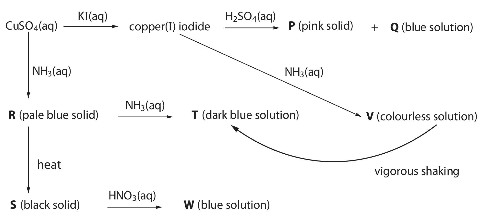
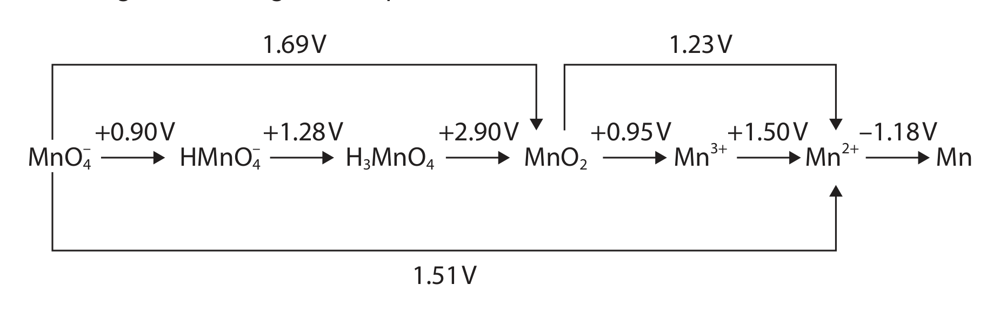
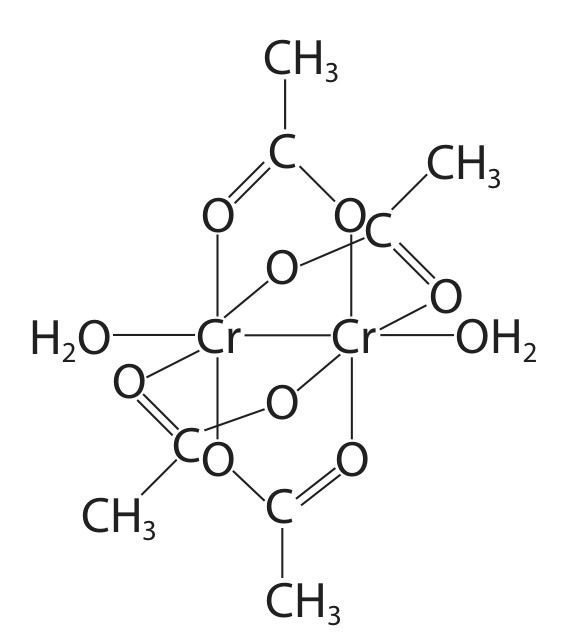
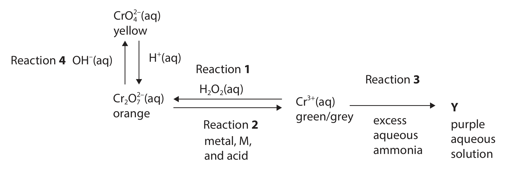
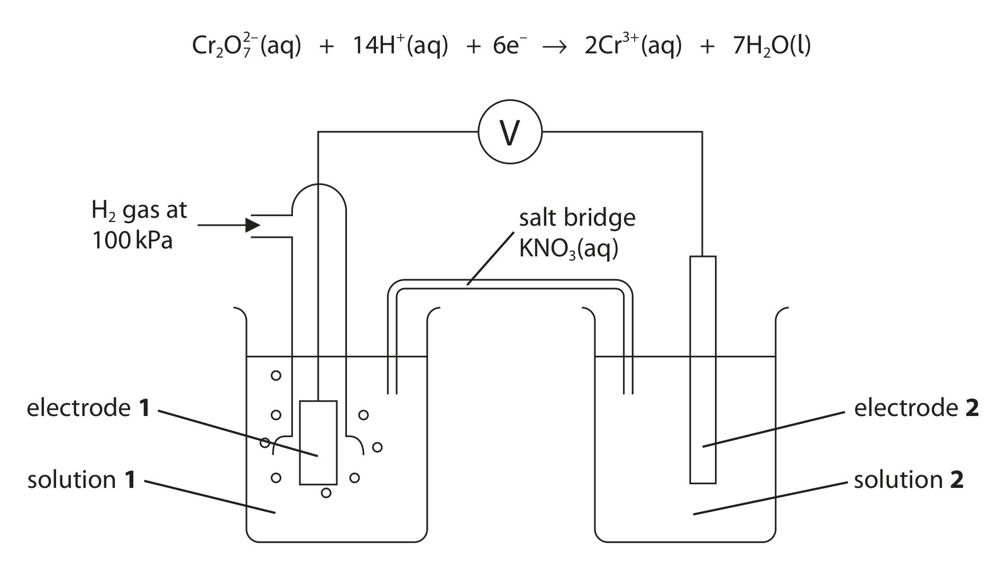
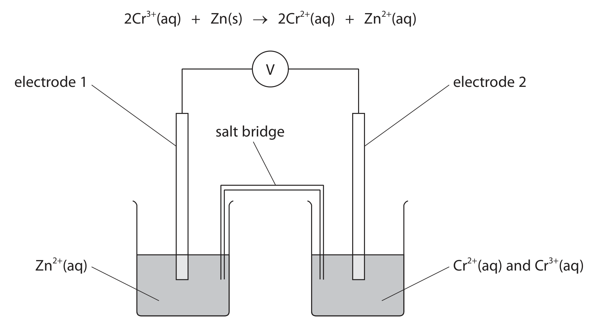
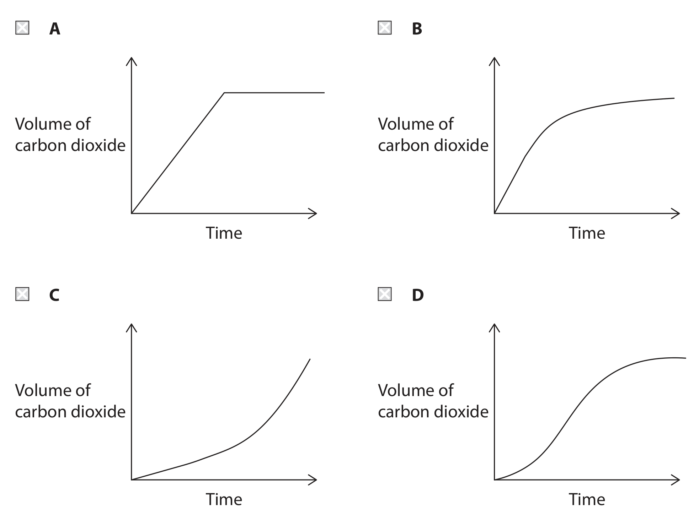
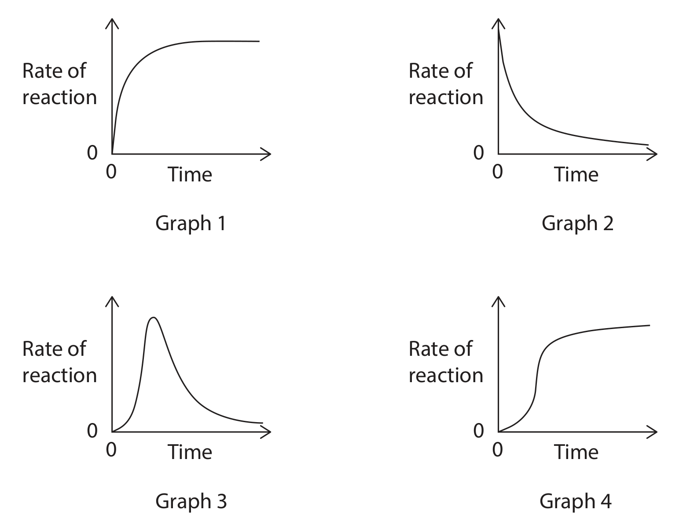

5.1 Redox Equilibria · Topic 16
Electrode potentials, electrochemical cells, fuel cells and redox titrations
5.1 Redox Equilibria · Topic 16
本页严格按 Pearson Edexcel International Advanced Level Chemistry specification 的 Topic 16: Redox Equilibria 编排，主要依据项目内的 5.1 Redox Equilibria.pdf.pdf。解释采用中文，专业词汇保留 English，便于和 Data Booklet、electrochemical series 及 exam wording 对照。
Learning objectives
学完本章后，你应该能够：
- explain oxidation and reduction using electron transfer and oxidation number；
- define standard electrode potential and describe the standard hydrogen electrode；
- measure electrode potentials using metal / ion、non-metal / ion 和 ion / ion half-cells；
- calculate \(E^\circ_{\mathrm{cell}}\) and write conventional cell diagrams；
- use electrode potentials to predict thermodynamic feasibility and disproportionation；
- explain the link between \(E^\circ_{\mathrm{cell}}\)、\(\Delta S_{\mathrm{total}}\) and \(\ln K\)；
- describe acidic and alkaline hydrogen-oxygen fuel cells；
- perform redox titration calculations involving manganate(VII)、iron(II)、iodine and thiosulfate，并讨论 uncertainty。
16.1 Oxidation and reduction
Electron transfer and oxidation number
Oxidation / reduction 可以用多种等价方式描述：
| Oxidation | Reduction |
|---|---|
| gain of oxygen | loss of oxygen |
| loss of hydrogen | gain of hydrogen |
| loss of electrons | gain of electrons |
| increase in oxidation number | decrease in oxidation number |
最适合 electrochemical reactions 的定义是：oxidation is loss of electrons，reduction is gain of electrons。记忆词是 OIL RIG：Oxidation Is Loss，Reduction Is Gain。
例如：
\[ \ce{Al -> Al^{3+} + 3e-} \]
是 oxidation；
\[ \ce{F2 + 2e- -> 2F-} \]
是 reduction。


s-, p- and d-block elements
- s-block metals 通常 lose electrons，形成 \(+1\) 或 \(+2\) ions，例如 \(\ce{Na -> Na+ + e-}\) 和 \(\ce{Ca -> Ca^{2+} + 2e-}\)；
- p-block metals 通常 form positive ions，但可能有 multiple oxidation states，例如 \(\ce{Al^{3+}}\)、\(\ce{Sn^{2+}}\) 和 \(\ce{Sn^{4+}}\)；
- p-block non-metals 通常 gain electrons，形成 negative ions，charge 可由 group number 与 8 的关系判断；
- d-block elements 常有 variable oxidation numbers，例如 copper、chromium 和 manganese 的不同 ions。
写 redox half-equation 时必须同时 balance atoms 和 charge，并用 electrons 显示 electron transfer。
16.2-16.4 Standard electrode potential and SHE
Definition and standard conditions
Standard electrode potential, \(E^\circ\)，是 standard half-cell 与 standard hydrogen electrode (SHE) 连接时，在 standard conditions 下测得的 potential difference。使用 high-resistance voltmeter，使 circuit 中几乎没有 current，测得 maximum potential difference。
Standard conditions 是：
- temperature = 298 K；
- gas pressure = 100 kPa；
- ion concentration = 1.00 mol dm\(^{-3}\)。
所有 \(E^\circ\) values 都是相对于 SHE 测量；SHE 被定义为 \(E^\circ=0.00\ \mathrm{V}\)。因此不同 half-cells 的 values 可以比较，形成 electrochemical series。
Standard hydrogen electrode
SHE 的 equilibrium 是：
\[ \ce{2H+(aq) + 2e- <=> H2(g)} \]
它包含：
- platinum electrode，通常 coated with platinum black；
- hydrogen gas at 100 kPa；
- aqueous \(\ce{H+}\) at \(1.00\ \mathrm{mol\,dm^{-3}}\)；
- temperature 298 K。
Platinum 是 inert electrode：提供 electron-conducting surface，但不参加 chemical reaction。Pt black 增大 surface area，使 hydrogen / hydrogen-ion equilibrium 更容易建立。
SHE 必须作为 reference electrode，因为 single half-cell 不能单独测出 absolute electrode potential；只有与已定义为 0.00 V 的 reference 连接，才可读出 relative potential。

Interpreting \(E^\circ\) values
Standard electrode potentials 通常以 reduction half-equations 列出：
\[ \ce{Br2(l) + 2e- <=> 2Br-(aq)}\qquad E^\circ=+1.09\ \mathrm{V} \]
\[ \ce{Na+(aq) + e- <=> Na(s)}\qquad E^\circ=-2.71\ \mathrm{V} \]
\(E^\circ\) 越 positive，left-hand species 越容易被 reduced，因而是 stronger oxidising agent。\(E^\circ\) 越 negative，right-hand species 越容易被 oxidised，因而是 stronger reducing agent。
16.5 Measuring standard electrode potentials
Three types of half-cell
把 unknown half-cell 与 SHE 连接，使用 salt bridge 和 high-resistance voltmeter。根据 half-cell 的 species，常见三种类型：
- metal / metal-ion half-cell：例如 \(\ce{Ag+(aq) / Ag(s)}\)；
- non-metal / non-metal-ion half-cell：例如 \(\ce{Br2(l) / Br-(aq)}\)，需要 Pt inert electrode；
- ion / ion half-cell：同一 element 的不同 oxidation states，例如 \(\ce{MnO4^- / Mn^{2+}}\)，需要 Pt electrode 和酸性 \(\ce{H+}\)。


Salt bridge and experimental conditions
Salt bridge 通常含有 \(\ce{KNO3(aq)}\)，允许 ions migrate，完成 internal circuit 并维持 electrical neutrality。选择 ions 时要避免与 half-cell ions 发生 reaction 或形成 precipitate。
测量 \(E\) 时必须严格写出并控制 conditions：temperature、gas pressure、ion concentrations、electrode materials 和 acid concentration。若 conditions 偏离 standard conditions，测量值是 \(E\) 而不是 \(E^\circ\)，不能直接当作 standard value 使用。
16.6-16.8 Electrochemical cells and cell diagrams
Calculating standard cell potential
对于两个 standard reduction potentials：
\[ E^\circ_{\mathrm{cell}}=E^\circ_{\mathrm{right}}-E^\circ_{\mathrm{left}} \]
也可以写成：
\[ E^\circ_{\mathrm{cell}}=E^\circ_{\mathrm{reduction}}-E^\circ_{\mathrm{oxidation}} \]
More positive half-cell 是 cathode / positive electrode，发生 reduction；less positive half-cell 是 anode / negative electrode，发生 oxidation。
例如：
\[ \ce{Cu^{2+} + 2e- <=> Cu}\qquad E^\circ=+0.34\ \mathrm{V} \]
\[ \ce{Zn^{2+} + 2e- <=> Zn}\qquad E^\circ=-0.76\ \mathrm{V} \]
\[ E^\circ_{\mathrm{cell}}=(+0.34)-(-0.76)=+1.10\ \mathrm{V} \]
Cu half-cell 是 positive pole，Zn half-cell 是 negative pole。

Worked example · cell potential
Given \(E^\circ(\)\()=+0.34\ \mathrm{V}\) and \(E^\circ(\)\()=-0.76\ \mathrm{V}\)：
- choose the more positive reduction as cathode：\(\ce{Cu^{2+} + 2e- -> Cu}\)；
- reverse zinc half-equation for oxidation：\(\ce{Zn -> Zn^{2+} + 2e-}\)；
- calculate \(E^\circ_{\mathrm{cell}}=+1.10\ \mathrm{V}\)；
- electron flow is from Zn to Cu through the external circuit。
Because \(E^\circ_{\mathrm{cell}}>0\)，the forward cell reaction is thermodynamically feasible under standard conditions。
Conventional cell representation
Cell diagram 用 shorthand 表示 materials、phase boundaries 和 salt bridge，不需要画完整 apparatus：
\[ \ce{Zn(s) | Zn^{2+}(aq) || Cu^{2+}(aq) | Cu(s)} \]
规则：
- left side 是 anode / oxidation，right side 是 cathode / reduction；
- single vertical line \(|\) 是 phase boundary；
- double line \(||\) 是 salt bridge；
- same phase 的 species 用 comma 分开；
- 若没有 conducting metal，需要在 outer edge 写 inert \(\ce{Pt}\)。
例如 \(\ce{Fe^{2+}/Fe^{3+}}\) half-cell：
\[ \ce{Pt | Fe^{2+}(aq),Fe^{3+}(aq)} \]
氯气 half-cell 可写成：
\[ \ce{Cl2(g),Cl-(aq) | Pt} \]
Cell diagrams 是 conventional representation，不是 quantitative balanced equation；但通常仍应写出 balanced half-equations。


16.9-16.12 Feasibility and thermodynamics
Thermodynamic feasibility
要预测 reaction direction：
- 找出 most positive \(E^\circ\)，它对应 reduction；
- 找出 less positive \(E^\circ\)，把它的 half-equation reverse，进行 oxidation；
- balance electrons，add half-equations；
- calculate \(E^\circ_{\mathrm{cell}}\)。
若 \(E^\circ_{\mathrm{cell}}>0\)，forward reaction 在 standard conditions 下 thermodynamically feasible。这表示 reaction 的 products 在 thermodynamic sense 更 stable，但不保证快速发生。
例如：
\[ \ce{Cl2 + 2e- -> 2Cl-}\qquad E^\circ=+1.36\ \mathrm{V} \]
\[ \ce{Cu^{2+} + 2e- -> Cu}\qquad E^\circ=+0.34\ \mathrm{V} \]
\(\ce{Cl2}\) 被 reduced，Cu 被 oxidised，\(E^\circ_{\mathrm{cell}}=+1.02\ \mathrm{V}\)，所以 reaction feasible。


Entropy and equilibrium constant
Specification 要求理解两个 directly proportional relationships：
\[ E^\circ_{\mathrm{cell}}\propto \Delta S_{\mathrm{total}} \]
\[ E^\circ_{\mathrm{cell}}\propto \ln K \]
因此 larger positive \(E^\circ_{\mathrm{cell}}\) 对应 larger positive total entropy change 和 larger \(K\)，即 equilibrium 更偏向 products。此处只要求理解 proportional relationships，不要求使用包含 Faraday constant 的 Gibbs equations 做 numerical calculation。
Limitations of \(E^\circ\) predictions
\(E^\circ\) prediction 有重要 limitations：
- \(E^\circ\) 只说明 thermodynamic feasibility，不说明 reaction rate；
- high activation energy 可能使 feasible reaction 很慢，system 表现为 kinetically stable；
- non-standard concentrations、gas pressures 和 temperatures 会改变 electrode potentials；
- electrode potentials 通常在 aqueous conditions 测量，不能直接预测 non-aqueous reactions；
- complex equilibria、precipitation 或 ligand interactions 也可能改变实际 behaviour。
例如 \(\ce{Cu^{2+}}\) 与 \(\ce{H2}\) 的 reaction 在 standard data 下可能有 positive emf，但 activation energy 很高，room temperature 下不明显发生。Thermodynamically feasible 不等于 kinetically observable。
Disproportionation
Disproportionation 是同一种 oxidation state 同时发生 oxidation 和 reduction：
\[ \ce{2X^{n} -> X^{n-1} + X^{n+1}} \]
判断方法是：
- 写出 intermediate oxidation state 向 higher state 的 oxidation half-equation；
- 写出 intermediate oxidation state 向 lower state 的 reduction half-equation；
- 合并并计算 \(E^\circ_{\mathrm{cell}}\)；
- 若 \(E^\circ_{\mathrm{cell}}>0\)，disproportionation 在 standard conditions 下 thermodynamically feasible。
注意：在相加 half-equations 时要 balance electrons，但不能把 \(E^\circ\) values 按 coefficients 相乘。
16.13 Electrochemical series
Standard electrode potentials 也称 standard reduction potentials。把 half-equations 按 \(E^\circ\) 从 negative 到 positive 排列，就得到 electrochemical series：
- more positive reduction potential \(→\) stronger oxidising agent；
- more negative reduction potential \(→\) stronger reducing agent；
- series 可用于预测 cell voltage、reaction direction 和 disproportionation。
实际应用时要结合 standard conditions 和 kinetic limitations，不能把 series 当作 reaction-rate table。
16.17-16.19 Hydrogen-oxygen fuel cells
Fuel-cell principle
Fuel cell 是 fuel 连续供给并在 electrode 发生 oxidation，oxygen 在另一 electrode 发生 reduction，释放的 chemical energy 转换为 electrical energy 的 electrochemical cell。只要 hydrogen / oxygen 持续供应，cell 就可以 continuous operation，不像 ordinary battery 那样把 reactants 全部预先储存在 cell 内。
Hydrogen-rich fuels（例如 hydrogen、methanol）可以作 fuel。Hydrogen-oxygen fuel cell 的 overall reaction 是：
\[ \ce{2H2(g) + O2(g) -> 2H2O(l)} \]
水是主要 reaction product，且 fuel cell 在 relatively low temperature 下把 energy 直接转为 electrical work，而不是先 combustion 成 heat。

Alkaline hydrogen-oxygen fuel cell
Alkaline electrolyte 中的 half-equations：
Negative electrode / anode / oxidation
\[ \ce{H2 + 2OH- -> 2H2O + 2e-} \]
Positive electrode / cathode / reduction
\[ \ce{O2 + 2H2O + 4e- -> 4OH-} \]
Multiply anode equation by 2，add and cancel \(\ce{OH-}\)、\(\ce{H2O}\) 和 electrons：
\[ \ce{2H2 + O2 -> 2H2O} \]
Anode 是 negative electrode，cathode 是 positive electrode；electrons travel through external circuit from anode to cathode。
Acidic hydrogen-oxygen fuel cell
Acidic electrolyte 中的 half-equations：
Anode / oxidation
\[ \ce{H2 -> 2H+ + 2e-} \]
Cathode / reduction
\[ \ce{O2 + 4H+ + 4e- -> 2H2O} \]
Combine after multiplying the anode by 2，得到 same overall equation：
\[ \ce{2H2 + O2 -> 2H2O} \]
虽然 acidic 和 alkaline cells 的 electrode equations 不同，但 net reaction 相同。
Benefits and risks
| Benefits | Risks / limitations |
|---|---|
| water is the main product | hydrogen is highly flammable |
| no direct \(\ce{CO2}\) from hydrogen fuel | hydrogen production may depend on non-renewable sources |
| no high-temperature combustion \(\ce{NO_x}\) | compressed hydrogen needs thick containers |
| continuous operation while fuel is supplied | low energy density per unit volume as a gas |
| high energy density per unit mass | infrastructure and fuel cost |
16.15-16.17 Redox titration calculations
General calculation sequence
Redox titration 中，oxidising agent 与 reducing agent 通过 electron transfer reaction，concentration 由 known solution 的 titre 推出。通用流程：
- 写 oxidant 和 reductant 的 half-equations；
- balance electrons，得到 overall ionic equation；
- 由 \(n=cV\) 计算 known solution 的 moles；
- 用 stoichiometric ratio 计算 sample species 的 moles；
- 若有 dilution / aliquot，按 volume factor 还原到 original sample；
- 求 concentration、mass、percentage purity 或 percentage composition；
- 检查 units、significant figures 和 titre concordance。
Potassium manganate(VII) and iron(II)
Acidified manganate(VII) titration
在 acidic solution 中，\(\ce{MnO4^-}\) 是 oxidising agent，reduced 为 \(\ce{Mn^{2+}}\)；\(\ce{Fe^{2+}}\) 是 reducing agent，oxidised 为 \(\ce{Fe^{3+}}\)。必须使用 dilute sulfuric acid；hydrochloric acid 可能被 oxidised，nitric acid 也是不合适的 oxidising acid。
Half-equations：
\[ \ce{MnO4^- + 8H+ + 5e- -> Mn^{2+} + 4H2O} \]
\[ \ce{Fe^{2+} -> Fe^{3+} + e-} \]
Overall ionic equation：
\[ \ce{MnO4^- + 8H+ + 5Fe^{2+} -> Mn^{2+} + 4H2O + 5Fe^{3+}} \]
Potassium manganate(VII) 是 self-indicator：endpoint 是 first permanent pale pink colour。可用于 iron tablets 的 percentage iron 或 hydrated ethanedioic acid formula analysis。
Worked example · iron tablet
一片 mass \(0.960\ \mathrm{g}\) 的 iron tablet 溶解后，平均需要 \(28.50\ \mathrm{cm^3}\) 的 \(0.0180\ \mathrm{mol\,dm^{-3}}\) \(\ce{KMnO4}\)。
\[ n(\ce{MnO4^-})=0.0180\times\frac{28.50}{1000}=5.13\times10^{-4}\ \mathrm{mol} \]
由 \(\ce{MnO4^-:Fe^{2+}}=1:5\)：
\[ n(\ce{Fe^{2+}})=5(5.13\times10^{-4})=2.565\times10^{-3}\ \mathrm{mol} \]
\[ m(\ce{Fe})=2.565\times10^{-3}\times55.8=0.143\ \mathrm{g} \]
\[ \%\mathrm{Fe}=\frac{0.143}{0.960}\times100=14.9\% \]
Sodium thiosulfate and iodine
Iodine-thiosulfate titration
Iodine 与 thiosulfate 的 ionic equation：
\[ \ce{I2 + 2S2O3^{2-} -> 2I- + S4O6^{2-}} \]
Iodine 的 brown / yellow colour 随着转化为 colourless iodide 而变浅。当 solution 变成 pale straw colour 时加入 starch；starch-iodine complex 是 blue-black，endpoint 是 blue-black colour just disappears。
这类 titration 可测定某 oxidising agent 的 concentration：先由 oxidant 将 excess iodide oxidise 为 \(\ce{I2}\)，再用 known sodium thiosulfate titrate the iodine。
Worked example · bleach analysis
Bleach 中 \(\ce{ClO^-}\) 先氧化 iodide：
\[ \ce{ClO^- + 2I^- + 2H+ -> Cl^- + I2 + H2O} \]
然后：
\[ \ce{I2 + 2S2O3^{2-} -> 2I- + S4O6^{2-}} \]
若 \(25.0\ \mathrm{cm^3}\) diluted bleach 需要 \(25.20\ \mathrm{cm^3}\) 的 \(0.0500\ \mathrm{mol\,dm^{-3}}\) thiosulfate：
\[ n(\ce{S2O3^{2-}})=0.0500\times\frac{25.20}{1000}=1.26\times10^{-3}\ \mathrm{mol} \]
由 \(\ce{ClO^-:S2O3^{2-}}=1:2\)，\(25.0\ \mathrm{cm^3}\) diluted sample 含 \(6.30\times10^{-4}\ \mathrm{mol}\) \(\ce{ClO^-}\)。若 \(10.0\ \mathrm{cm^3}\) original bleach diluted to \(250.0\ \mathrm{cm^3}\)，concentration of original bleach：
\[ c(\ce{ClO^-})=0.630\ \mathrm{mol\,dm^{-3}} \]
16.16 Uncertainty and validity
Percentage uncertainty
Percentage uncertainty 用来比较 measurement uncertainty 相对于 measured value 的 significance：
\[ \%\mathrm{uncertainty}=\frac{\mathrm{absolute\ uncertainty}}{\mathrm{measured\ value}}\times100 \]
当 add / subtract measurements 时，absolute uncertainties 相加；当 quantities multiply / divide 时，通常应考虑 relative / percentage uncertainties 的 propagation。Final answer 的 uncertainty 可能影响 significant figures 和结论的 validity。
例如 burette 每次 reading uncertainty 为 \(\pm0.10\ \mathrm{cm^3}\)，一份 titre 需要 initial 和 final readings，所以 titre uncertainty 约为 \(\pm0.20\ \mathrm{cm^3}\)：
- titre \(5.0\ \mathrm{cm^3}\)：\(0.20/5.0\times100=4.0\%\)；
- titre \(30.0\ \mathrm{cm^3}\)：\(0.20/30.0\times100=0.67\%\)。
因此可以通过适当 dilution，使 titre 较大，从而降低 burette readings 的 percentage uncertainty。还应使用 concordant titres、repeat measurements、average results，并报告 anomalous result 的处理。
Unit 5 Past-paper practice · Topic 16
以下内容重新按 PastPaper/Unit5 中 2021–2026 年的 QP / MS 核对整理。只收录与 Redox Equilibria 直接相关的题目：standard electrode potentials、electrochemical cells、fuel cells、catalysis、disproportionation 和 redox titration。题目保留 question paper 的 English wording；答案隐藏，structured question 的每个 subquestion 后保留答题区。题目中确有图的部分使用同一份 QP 在 extracted_figures/<paper>/adjusted 中的独立裁图。
Structured questions · 大题
2021 Jan · U5A Q19 The diagram summarises some reactions of copper compounds.

(a) Identify, by name (including the oxidation state) or formula, the species in the sequence that contain copper. (7)
(b)(i) T and V are the same type of chemical species. Name the type of chemical species. (1)
(b)(ii) Explain why T is coloured while V is colourless. (3)
(b)(iii) Explain the change from V into T on vigorous shaking. (2)
(c)(i) Write the ionic equation for the disproportionation of copper(I) iodide with sulfuric acid. (1)
(c)(ii) Show, using the electrode potential data, that the reaction is thermodynamically feasible. (2)
(d) 4.26 g of \(\ce{K2CuCl4.nH2O}\) is made up to 250.0 cm\(^3\). Excess potassium iodide is added to a 25.0 cm\(^3\) portion. The iodine produced is titrated with 0.0500 mol dm\(^{-3}\) sodium thiosulfate. The mean titre is 26.65 cm\(^3\). Use the equations below to calculate \(n\).
\[ \ce{2Cu^{2+} + 4I- -> 2CuI + I2} \]
\[ \ce{2S2O3^{2-} + I2 -> S4O6^{2-} + 2I-} \]
(6)
Markscheme-based answer · 得分点
- (a) P: \(\ce{CuI}\); Q: \(\ce{CuSO4}\) / \(\ce{Cu^{2+}}\); R: \(\ce{Cu(OH)2}\); S: \(\ce{CuO}\); T: \(\ce{[Cu(NH3)4(H2O)2]^{2+}}\); V: \(\ce{[Cu(NH3)2Cl2]}\) / the colourless copper(I) ammine species; W: \(\ce{Cu(NO3)2}\), with oxidation states identified correctly. [7]
- (b) T and V are complex ions; T has a partially filled d-subshell and absorbs visible light by d–d transitions, whereas the copper(I) ion in V is \(d^{10}\); shaking changes the ligand environment / equilibrium to the coloured copper(II) ammine complex. [6]
- (c) Use the balanced disproportionation equation and \(E^\circ_{\mathrm{cell}}>0\) to demonstrate feasibility. [3]
- (d) Apply the 1:1 copper(I) iodide : iodine and 2:1 thiosulfate : iodine ratios, scale the aliquot to 250.0 cm\(^3\), then use \(M_r(\)\()=283.7+18.0n\) to obtain \(n\). [6]
2021 Oct · U5A Q20(c) A student determines the change in oxidation number of nitrogen when a solution of magnesium nitrate, \(\ce{Mg(NO3)2}\), is titrated with aqueous titanium(III) chloride.
Procedure. Using a volumetric flask, prepare 100.0 cm\(^3\) of an aqueous solution containing 0.750 g of solid \(\ce{Mg(NO3)2.6H2O}\). Pipette 10.0 cm\(^3\) into a conical flask, add a few drops of alizarin indicator, add 2 cm\(^3\) concentrated hydrochloric acid and heat the mixture. Fill a burette with 0.0850 mol dm\(^{-3}\) aqueous titanium(III) chloride and titrate while continuing to heat. During the titration, \(\ce{Ti^{3+}}\) ions are oxidised to \(\ce{TiO^{2+}}\) ions. Alizarin is green in the presence of aqueous \(\ce{Ti^{3+}}\) and yellow in the presence of aqueous \(\ce{TiO^{2+}}\). The end-point is reached on addition of 20.70 cm\(^3\) of titanium(III) chloride.
(c)(i) State the colour change observed at the end-point. (1)
(c)(ii) Use the results to determine the final oxidation state of nitrogen in the titration. You must show your working. [\(M_r\) value: \(\ce{Mg(NO3)2.6H2O}\)=256.3$] (5)
(c)(iii) Write the overall ionic equation for the titration reaction using your answer to (c)(ii) and the relevant half-equations below. (2)
\[ \ce{TiO^{2+} + 2H+ + e- <=> Ti^{3+} + H2O} \]
\[ \ce{NO3- + 4H+ + 3e- <=> NO + 2H2O} \]
(c)(iv) Use the electrode potential data to calculate \(E^\circ_{\mathrm{cell}}\) for the overall titration reaction. (1)
(c)(v) Suggest why the contents of the conical flask are heated. (1)
(c)(vi) The student’s teacher said, “As \(\ce{TiCl3}\) is blue and \(\ce{TiO^{2+}}\) ions are colourless in aqueous solution, the titration can be carried out without an alizarin indicator.” Assess this statement. Identify a coloured complex ion expected when \(\ce{TiCl3}\) dissolves in water, explain how its colour arises, and suggest why the titration may be more accurate with alizarin. (6)
Markscheme-based answer · 得分点
- (i) yellow to permanent pale green. [1]
- (ii) \(n(\)\()=0.0850\times20.70/1000=1.7595\times10^{-3}\) mol; \(n(\)\()=0.750/256.3=2.9263\times10^{-3}\) mol in 100.0 cm\(^3\); nitrate in 10.0 cm\(^3\) is \(5.8525\times10^{-4}\) mol; ratio \(\ce{Ti^{3+}}\) : \(\ce{NO3-}\)=3:1$; final oxidation state of N is +2. [5]
- (iii) \(\ce{3Ti^{3+} + H2O + NO3- -> 3TiO^{2+} + 2H+ + NO}\). [2]
- (iv) \(E^\circ_{\mathrm{cell}}=0.96-0.10=+0.86\) V. [1]
- (v) Heating increases the rate / helps overcome activation energy. [1]
- (vi) \(\ce{[Ti(H2O)6]^{3+}}\) is coloured; the partially filled d-subshell is split by ligands, absorbs visible light during d–d transitions and the complementary colour is observed. Alizarin gives a sharper, more distinct end-point because the complex colour is not sufficiently intense / changes gradually. [6]
2026 Jan · U5A Q22 Peroxodisulfate ions, \(\ce{S2O8^{2-}}\), react with iodide ions, \(\ce{I-}\), as shown.
\[ \ce{S2O8^{2-}(aq) + 2I-(aq) -> 2SO4^{2-}(aq) + I2(aq)} \]
The standard cell potential, \(E^\circ_{\mathrm{cell}}\), for this reaction is +1.47 V.
(a) Write the cell diagram for measuring this cell potential using the conventional representation of half-cells. (2)
(b)(i) Write the ionic half-equation for the reduction reaction. (1)
(b)(ii) Calculate the value for the reduction potential in this half-equation. Use your Data Booklet. (1)
(b)(iii) State the relationship between \(E^\circ_{\mathrm{cell}}\) and total entropy change, and explain how the \(E^\circ_{\mathrm{cell}}\) value demonstrates that this reaction is thermodynamically feasible. (3)
(b)(iv) Explain why, despite being thermodynamically feasible, the reaction does not proceed in the absence of a catalyst. (2)
(c)(i) Explain, using suitable equations, why addition of either iron(II) or iron(III) ions catalyses the reaction. State symbols are not required. (3)
(c)(ii) Justify your answer to (c)(i) using the electrode potential for reduction of iron(III) to iron(II) given in the Data Booklet. (3)
Markscheme-based answer · 得分点
- (a) \(\ce{Pt | I- , I2 || S2O8^{2-}, SO4^{2-} | Pt}\), with the left-hand oxidation half-cell and right-hand reduction half-cell in the conventional order. [2]
- (b)(i) \(\ce{S2O8^{2-}+2e- -> 2SO4^{2-}}\). [1]
- (b)(ii) \(E^\circ(\)\()=+0.54\) V, hence \(E^\circ(\)\()=+1.47+0.54=+2.01\) V. [1]
- (b)(iii) \(E^\circ_{\mathrm{cell}}\) is proportional to \(ΔS_{\mathrm{total}}\) for the cell reaction; positive \(E^\circ_{\mathrm{cell}}\) gives positive \(ΔS_{\mathrm{total}}\) and a thermodynamically feasible reaction. [3]
- (b)(iv) The reaction has a high activation energy, so very few successful collisions occur without a catalyst. [2]
- (c) Catalytic cycle: \(\ce{2Fe^{2+}+S2O8^{2-}->2Fe^{3+}+2SO4^{2-}}\) and \(\ce{2Fe^{3+}+2I-->2Fe^{2+}+I2}\); the iron ions are regenerated. Use \(E^\circ\) values to show both steps are feasible. [6]
2026 May · U5A Q16 The manganate(VII) ion is a strong oxidising agent. It is used widely in the chemical industry and in laboratories, usually in the form of the potassium salt, \(\ce{KMnO4}\), or the sodium salt, \(\ce{NaMnO4}\). One of its uses is in redox titrations, but it is also used in organic synthesis.
(a)(i) Compounds containing the manganate(VII) ion can be prepared by the reaction of manganese(II) chloride with sodium chlorate(I). Complete the equation. (2)
\[ \ce{MnCl2 + NaClO + NaOH -> NaMnO4 + NaCl + H2O} \]
(a)(ii) Explain why this is a redox reaction by quoting relevant oxidation numbers. (2)
(b)(i) The manganate(VI) and manganate(V) ions can disproportionate to manganate(VII) ions and manganese(IV) oxide. Write equations for both disproportionation reactions. (2)
(b)(ii) Use the standard electrode potentials to calculate \(E^\circ_{\mathrm{cell}}\) for each reaction and state which disproportionation is more feasible. (2)
(c)(i) Potassium manganate(VII) is standardised using arsenic(III) oxide, \(\ce{As2O3}\). The mole ratio is 5:4 and arsenic(V) is formed. Determine the final oxidation state of manganese. (3)
(c)(ii) 1.05 g of \(\ce{As2O3}\) is dissolved and made up to 250.0 cm\(^3\). A 25.0 cm\(^3\) aliquot requires a mean titre of 23.65 cm\(^3\) of potassium manganate(VII). Calculate the concentration of the potassium manganate(VII) solution. (4)
(d)(i) In alkaline solution, manganate(VII) ions oxidise methylbenzene to benzoate ions. In an experiment, 10.0 g \(\ce{KMnO4}\) is mixed with 2.50 g methylbenzene. Identify the limiting reactant. [\(M_r\): \(\ce{KMnO4}\)=158$, methylbenzene = 92] (3)
(d)(ii) Explain how benzoate ions are converted into benzoic acid. (1)
Markscheme-based answer · 得分点
- (a) \(\ce{2MnCl2 + 5NaClO + 6NaOH -> 2NaMnO4 + 9NaCl + 3H2O}\); Mn changes +2 to +7 and Cl in \(\ce{ClO-}\) changes +1 to −1. [4]
- (b) \(\ce{3MnO4^{3-}+4H2O->2MnO2+MnO4^-+8OH-}\) and \(\ce{3MnO4^{2-}+2H2O->MnO2+2MnO4^-+4OH-}\); \(E^\circ\) values are +0.66 V and +0.04 V respectively, so both are feasible and the manganate(V) reaction is more feasible. [4]
- (c) Mn is reduced from +7 to +2; the standardisation calculation gives \(c(\)\()=0.0180\) mol dm\(^{-3}\). [7]
- (d) \(\ce{KMnO4}\) is in excess and methylbenzene is limiting; acidify / protonate the benzoate ion to form benzoic acid. [4]
2021 Jan · U5A Q21 A yellow crystalline solid E dissolved in distilled water to give a yellow solution. Addition of dilute sulfuric acid to this solution produced an orange solution F. Warming F with ethanol resulted in a green solution G, and the formation of ethanal. A standard cell was set up using solutions of F and G for the right-hand electrode and ethanol and ethanal for the left-hand electrode. \(E^\circ_{\mathrm{cell}}\) was found to be +1.94 V. The half-equation for ethanal / ethanol is \(\ce{CH3CHO + 2H+ + 2e- <=> C2H5OH}\), \(E^\circ=-0.61\) V.
(a) Deduce the formulae of the ions responsible for the colours of F and G, using the standard electrode potential and the values in the Data Booklet. (2)
(b) Write the overall equation for the reaction in the cell. State symbols are not required. (2)
(c) Write the ionic equation for the reaction of the aqueous solution of E with dilute sulfuric acid. State symbols are not required. (1)
Markscheme-based answer · 得分点
- (a) F contains \(\ce{Cr2O7^{2-}}\) (orange); G contains \(\ce{Cr^{3+}}\) (green). Use the cell emf and the ethanal / ethanol potential to identify the chromium(VI) / chromium(III) couple. [2]
- (b) Combine dichromate(VI) reduction with ethanol oxidation to ethanal and balance electrons, \(\ce{H+}\) and water. [2]
- (c) \(\ce{2CrO4^{2-}+2H+->Cr2O7^{2-}+H2O}\). [1]
2021 May · U5A Q18 This question is about manganese compounds. Some data are given below.
| Electrode reaction | \(E^\circ\) / V |
|---|---|
| \(\ce{MnO4- + e- <=> MnO4^{2-}}\) | +0.56 |
| \(\ce{MnO4^{2-} + 2H2O + 2e- <=> MnO2 + 4OH-}\) | +0.59 |
| \(\ce{Fe^{3+} + e- <=> Fe^{2+}}\) | +0.77 |
| \(\ce{MnO2 + 4H+ + 2e- <=> Mn^{2+} + 2H2O}\) | +1.23 |
| \(\ce{MnO4- + 8H+ + 5e- <=> Mn^{2+} + 4H2O}\) | +1.51 |
| \(\ce{MnO4- + 4H+ + 3e- <=> MnO2 + 2H2O}\) | +1.70 |
| \(\ce{MnO4^{2-} + 4H+ + 2e- <=> MnO2 + 2H2O}\) | +2.26 |
(a)(i) Write the ionic equation for the disproportionation of manganate(VI) ions, \(\ce{MnO4^{2-}}\), in acidic conditions, using relevant half-equations from the table. State symbols are not required. (2)
(a)(ii) Calculate \(E^\circ_{\mathrm{cell}}\) for the disproportionation of manganate(VI) ions in acidic conditions, stating whether or not the reaction is thermodynamically feasible. (2)
(a)(iii) Using the standard electrode potentials in the table, assess the thermodynamic feasibility of preparing manganate(VI) by reacting manganate(VII) and manganese(IV) oxide in alkaline conditions. (4)
(b) Steel is an alloy of iron and carbon. A known mass of steel wire was dissolved in dilute sulfuric acid, made up to 250.0 cm\(^3\), and 25.0 cm\(^3\) portions were titrated with 0.0195 mol dm\(^{-3}\) potassium manganate(VII).
(b)(i) State the colour change at the end-point. (1)
(b)(ii) A student used 1.53 g wire and obtained a mean titre of 27.35 cm\(^3\). Calculate the percentage of iron in the steel wire. (5)
(b)(iii) A second student used distilled water instead of dilute sulfuric acid to make up the solution; a brown suspension formed. Explain how the titre value would be affected. (3)
(c)(i) Complete the uncertainty table for the balance, burette, pipette and volumetric flask. The measured values and reading uncertainties are: balance 1.53 g, ±0.005 g; burette 27.35 cm\(^3\), ±0.05 cm\(^3\); pipette 25.0 cm\(^3\), ±0.06 cm\(^3\); volumetric flask 250.0 cm\(^3\), ±0.3 cm\(^3\). (2)
(c)(ii) A third student obtained 95.863% for the proportion of iron. State whether this is an appropriate number of significant figures, justifying your answer using the total percentage uncertainty. (2)
Markscheme-based answer · 得分点
- Balance the disproportionation and calculate \(E^\circ_{\mathrm{cell}}\) from reduction minus oxidation potentials; a positive value indicates feasibility. [4]
- (b) The endpoint is the first permanent pale pink / purple permanganate colour; use \(\ce{MnO4-:Fe^{2+}=1:5}\) and scale the aliquot to calculate the iron percentage. The brown suspension consumes permanganate, giving a larger titre and an overestimated iron content. [9]
- (c) Calculate each percentage uncertainty, add the relevant relative uncertainties and report only justified significant figures. [4]
2022 May · U5A Q15 This question is about transition metal compounds and their quantitative analysis. Potassium dichromate(VI), \(\ce{K2Cr2O7}\), present in small amounts in cement, was determined by titration. A 50.0 g sample of cement was washed with water and the filtrate made up to 100.0 cm\(^3\) using 2 mol dm\(^{-3}\) sulfuric acid. A 50.0 cm\(^3\) portion was titrated with 3.24\(\times10^{-4}\) mol dm\(^{-3}\) ammonium iron(II) sulfate. The mean titre was 10.90 cm\(^3\). The ionic equation is \(\ce{6Fe^{2+}+Cr2O7^{2-}+14H+->2Cr^{3+}+7H2O+6Fe^{3+}}\).
(a)(i) State the colour of each chromium species. (1)
(a)(ii) Suggest a reason an indicator is needed. (1)
(a)(iii) Calculate the percentage by mass of \(\ce{K2Cr2O7}\). (5)
(b) N-phenylanthranilic acid is prepared by mixing 100 mg acid in 5 cm\(^3\) sodium hydroxide and diluting to 100 cm\(^3\). Explain why the acid is added to sodium hydroxide before water. (2)
Markscheme-based answer · 得分点
- (a)(i) Dichromate(VI) is orange; chromium(III) is green / violet in the relevant aqueous complex. [1]
- (a)(ii) The colour change at equivalence is not sufficiently sharp / obvious without an indicator. [1]
- (a)(iii) Calculate \(n(\ce{Fe^{2+}})\) from titre, use the 6:1 ratio, scale to 100.0 cm\(^3\), convert dichromate to mass and divide by 50.0 g. [5]
- (b) Dissolve the acid in sodium hydroxide first; adding water afterwards limits local heating, splashing and boiling during dilution. [2]
2022 Oct · U5A Q19 This question is about the chemistry of vanadium. The standard electrode potentials are \(\ce{V^{2+}+2e-<=>V}\), \(E^\circ=-1.18\) V; \(\ce{V^{3+}+e-<=>V^{2+}}\), \(E^\circ=-0.26\) V; \(\ce{VO^{2+}+2H+ +e-<=>V^{3+}+H2O}\), \(E^\circ=+0.34\) V; and \(\ce{VO3-+4H+ +e-<=>VO^{2+}+2H2O}\), \(E^\circ=+1.00\) V.
(a) Explain the highest stable oxidation state formed by vanadium by referring to its electronic configuration. (3)
(b)(i) Justify the use of sodium thiosulfate to convert \(\ce{VO^{2+}}\) into \(\ce{V^{3+}}\) with no other vanadium species formed, by writing relevant equations and calculating their \(E^\circ_{\mathrm{cell}}\) values. (4)
(b)(ii) Explain why nickel is not a suitable reagent for this conversion with no other vanadium species formed. (2)
(c) In a titration, a ferrovanadium sample is dissolved to form \(\ce{VO3-}\). A 25.0 cm\(^3\) aliquot is mixed with 25.0 cm\(^3\) of 0.250 mol dm\(^{-3}\) iron(II) sulfate; \(\ce{VO3-}\) reacts according to \(\ce{VO3-+4H+ +Fe^{2+}<=>VO^{2+}+2H2O+Fe^{3+}}\). The remaining iron(II) is titrated with potassium manganate(VII).
(c)(i) State the colour change at the endpoint. (1)
(c)(ii) Explain why the titre determines the amount of vanadium in the original sample. (2)
Markscheme-based answer · 得分点
- (a) Vanadium is \([\ce{Ar}]3d^34s^2\); the five outer electrons can participate in bonding / oxidation, giving maximum oxidation state +5. [3]
- (b) Use the \(\ce{VO^{2+}/V^{3+}}\) couple and thiosulfate oxidation; the desired step has positive \(E^\circ_{\mathrm{cell}}\) while further reduction is not feasible. Nickel does not provide the required potential window. [6]
- (c) The first permanent pale pink permanganate colour marks the endpoint; initial iron(II) minus remaining iron(II) gives the amount that reduced vanadium, hence the vanadium content. [3]
2023 Jan · U5A Q18 Vanadium forms compounds with oxidation states +2, +3, +4 and +5.
(a) State the oxidation number of vanadium in \(\ce{Na3VO4}\). (1)
(b) In aqueous solution, vanadium(II) exists as \(\ce{[V(H2O)6]^{2+}}\) but vanadium(V) exists as \(\ce{[VO2(H2O)4]+}\). Explain why vanadium(V) does not exist as \(\ce{[V(H2O)6]^{5+}}\). (3)
(c) Hydrated potassium vanadium(III) sulfate contains 7.9% potassium, 10.2% vanadium, 12.9% sulfur, 4.8% hydrogen and 64.2% oxygen. Calculate the empirical formula and hence write the overall formula showing the \(\ce{K+}\), \(\ce{V^{3+}}\) and \(\ce{SO4^{2-}}\) ions and water of crystallisation. (3)
(d) An acidified aqueous solution of potassium manganate(VII) oxidises vanadium(III) ions. 10.0 cm\(^3\) of 0.132 mol dm\(^{-3}\) \(\ce{V^{3+}}\) is titrated against 0.0200 mol dm\(^{-3}\) potassium manganate(VII); the mean titre is 26.40 cm\(^3\).
(d)(i) Calculate the ratio of moles of \(\ce{MnO4-}\) to moles of \(\ce{V^{3+}}\). Show all working. (3)
(d)(ii) Write the equation for the reaction between manganate(VII) ions and vanadium(III) ions in acidic solution. (2)
(e) Vanadium(V) ions, \(\ce{VO2+}\), in acidic solution may be reduced step by step. Compare and contrast the use of iron and tin in this reduction process. Include equations and \(E^\circ_{\mathrm{cell}}\) values for any reactions that occur. (6)
Markscheme-based answer · 得分点
- (a) +5. [1]
- (b) The highly charged +5 ion strongly polarises coordinated water, promoting hydrolysis / oxo formation; therefore oxo species are favoured over \(\ce{[V(H2O)6]^{5+}}\). [3]
- (c) Determine the mole ratio from the percentage composition, balance charge with potassium and sulfate, and include the water of crystallisation. [3]
- (d) Use the given concentrations and volumes for the mole ratio, then balance electron transfer with acidified permanganate. [5]
- (e) Compare each calculated \(E^\circ_{\mathrm{cell}}\); iron stops at the appropriate vanadium oxidation state where later steps are non-spontaneous, whereas tin can reduce further. [6]
2023 Oct · U5A Q18 This question is about electrochemical cells and redox reactions.
(a) Draw a labelled diagram of the apparatus you would use to measure the standard electrode potential of a \(\ce{Cu^{2+}(aq) | Cu(s)}\) electrode with a standard hydrogen electrode. Include essential conditions. (5)
(b) The standard electrode potentials are \(\ce{Cr2O7^{2-}(aq)+14H+(aq)+6e-<=>2Cr^{3+}(aq)+7H2O(l)}\), \(E^\circ=+1.33\) V, and \(\ce{Cl2(g)+2e-<=>2Cl-(aq)}\), \(E^\circ=+1.36\) V.
(b)(i) Explain why acidified dichromate(VI) ions react with concentrated hydrochloric acid to form chlorine, even though \(E^\circ_{\mathrm{cell}}=-0.03\) V. (3)
(b)(ii) Write the cell diagram, using the conventional representation of half-cells, for the reaction to produce chlorine. (2)
(c) When 25.0 cm\(^3\) of 0.100 mol dm\(^{-3}\) \(\ce{X2O5}\) reacts with a reducing agent, X is reduced to a lower oxidation state. To oxidise X back to its original oxidation state requires 50.0 cm\(^3\) of 0.0200 mol dm\(^{-3}\) acidified potassium manganate(VII). The half-equation is \(\ce{MnO4-+8H+ +5e-->Mn^{2+}+4H2O}\). Calculate the oxidation state of X after it has been reduced. (3)
Markscheme-based answer · 得分点
- (a) Include Cu(s) in 1 mol dm\(^{-3}\) \(\ce{Cu^{2+}}\), a platinised Pt / \(\ce{H2}\) standard hydrogen electrode with 1 mol dm\(^{-3}\) \(\ce{H+}\), 100 kPa hydrogen, 298 K, salt bridge and high-resistance voltmeter. [5]
- (b) Non-standard concentrated conditions alter electrode potentials; chloride concentration and acid conditions drive chlorine formation. Cell diagram: \(\ce{Pt | Cl2,Cl- || Cr2O7^{2-},H+,Cr^{3+} | Pt}\). [5]
- (c) \(n(\ce{MnO4-})=1.00\times10^{-3}\) mol gives \(5.00\times10^{-3}\) mol electrons; this is 2 electrons per \(\ce{X2O5}\), so X changes from +5 to +4. [3]
2024 Jan · U5A Q16 A Latimer diagram for manganese at pH = 0 is shown in the question paper. It includes \(\ce{MnO4-}\), \(\ce{HMnO4}\), \(\ce{H3MnO4}\), \(\ce{MnO2}\), \(\ce{Mn^{3+}}\), \(\ce{Mn^{2+}}\) and \(\ce{Mn}\) with standard electrode potentials. The diagram shows \(\ce{MnO4- + 4H+ + 3e- <=> MnO2 + 2H2O}\), \(E^\circ=+1.69\) V.

(a)(i) Justify the assignment of the oxidation state +5 to manganese in \(\ce{H3MnO4}\) using oxidation numbers. (1)
(a)(ii) Write an equation for the reaction of \(\ce{H3MnO4}\) in acidic solution to give ions containing manganese(VI) and manganese(IV). Use the Latimer diagram to obtain the formulae of the ions produced. (2)
(a)(iii) Deduce whether or not this disproportionation reaction is thermodynamically feasible by calculating \(E^\circ\) for the reaction. (2)
(b) Before use in titration experiments, potassium manganate(VII) solutions must be standardised. One method uses ethanedioate ions to find the exact concentration of the manganate(VII) ions. 250.0 cm\(^3\) of a standard solution contained 1.915 g of sodium ethanedioate, \(\ce{Na2C2O4}\). A potassium manganate(VII) solution of approximately 0.02 mol dm\(^{-3}\) was standardised using this solution. Excess sulfuric acid was added to 25.0 cm\(^3\) portions of the potassium manganate(VII) solution, which were titrated with the sodium ethanedioate solution. The mean titre was 22.95 cm\(^3\). The relevant half-equations are \(\ce{MnO4-+8H+ +5e-->Mn^{2+}+4H2O}\) and \(\ce{C2O4^{2-}->2CO2+2e-}\). (b)(i) State the colour change at the endpoint. (1) (b)(ii) Calculate the accurate concentration of the potassium manganate(VII), in mol dm\(^{-3}\), giving your answer to an appropriate number of significant figures. (4) (b)(iii) A second titration carried out without the addition of sulfuric acid resulted in the formation of a brown suspension. Explain how the value of the mean titre would be affected, if at all, by the reaction that forms this suspension. There is no need to calculate \(E^\circ_{\mathrm{cell}}\) values. (3)
Markscheme-based answer · 得分点
- (a)(i) \(x+3-8=0\), so \(x=+5\). [1]
- (a)(ii) Use the Latimer products (manganese(VI) oxo ion and \(\ce{MnO2}\)) and balance atoms, charge, water and \(\ce{H+}\). [2]
- (a)(iii) \(E^\circ_{\mathrm{cell}}\) is the reduction potential of the lower oxidation-state branch minus that of the oxidation branch; positive means feasible. [2]
- (b) Calculate moles of ethanedioate, apply the reaction ratio with \(\ce{MnO4-}\), divide by the aliquot volume and report the concentration. [5]
2024 May · U5A Q14 This question is about cell reactions involving chromium. Use your Data Booklet when answering this question.
(a)(i) Name the type of the forward reaction shown in the right-hand electrode systems in the Data Booklet. (1)
(a)(ii) Name the series formed when the right-hand electrode systems are placed in order, most negative first. (1)
(b) A student sets up apparatus to measure the standard electrode potential for right-hand electrode system 8. The apparatus contains hydrogen gas, a platinum electrode, 1 mol dm\(^{-3}\) hydrochloric acid, a voltmeter, a salt bridge containing aqueous potassium nitrate, and a right-hand half-cell labelled X and Y.
(b)(i) Identify X and Y. (2)
(b)(ii) Give two reasons why the initial reading on the voltmeter may differ from the stated value given in the Data Booklet. (2)
(b)(iii) The voltmeter is removed and the cell is allowed to run for one hour. Explain the changes that would occur in the right-hand half-cell during this time. (2)
(c)(i) Explain, by calculating \(E^\circ_{\mathrm{cell}}\) values, why Fe(II) is used to reduce Cr(VI) to Cr(III) but zinc is used to reduce Cr(VI) to Cr(II). (4)
(c)(ii) State the essential condition required for these reactions to occur. (1)
Markscheme-based answer · 得分点
- (a) Reduction; electrochemical / standard reduction potential series. [2]
- (b) X is Pt; Y is 1 mol dm\(^{-3}\) \(\ce{Cr^{2+}}\) and 1 mol dm\(^{-3}\) \(\ce{Cr^{3+}}\). Two valid reasons are rapid oxidation of Cr(II) by air and non-standard temperature / other cell conditions. During operation Cr(II) decreases and Cr(III) increases because \(E^\circ_{\mathrm{cell}}\) is positive. [6]
- (c) Zinc: +2.09 V to Cr(III), +0.35 V to Cr(II); Fe(II): +0.56 V to Cr(III), −1.18 V to Cr(II). Therefore Fe(II) stops at Cr(III), whereas zinc reduces further. The reaction requires acidified solution. [5]
2025 Jan · U5A Q18 The standard emf, \(E^\circ_{\mathrm{cell}}\), of the cell shown was measured. The left-hand half-cell contains a zinc electrode in a solution containing \(\ce{Zn^{2+}(aq)}\); the right-hand half-cell is the \(\ce{Fe^{3+}(aq)+e-<=>Fe^{2+}(aq)}\) system, \(E^\circ=+0.77\) V. The zinc system is \(\ce{Zn^{2+}(aq)+2e-<=>Zn(s)}\), \(E^\circ=-0.76\) V.
(a)(i) Identify the substances needed in the salt bridge and the right-hand half-cell. Include concentrations where appropriate. (4)
(a)(ii) State why a salt bridge is used rather than a wire. (1)
(b) Write an equation for the reaction that would take place if current was allowed to flow through the circuit. (2)
(c) Under standard conditions, \(E^\circ_{\mathrm{cell}}\) is +1.53 V. State what would happen to this value when the \(\ce{Zn^{2+}}\) solution is diluted. Justify your answer. (2)
Markscheme-based answer · 得分点
- Salt bridge: soluble inert electrolyte such as \(\ce{KNO3}\); right-hand cell: Pt with 1 mol dm\(^{-3}\) each of \(\ce{Fe^{2+}}\) and \(\ce{Fe^{3+}}\). [4]
- The salt bridge completes the ionic circuit and maintains electrical neutrality without direct mixing. [1]
- \(\ce{Zn + 2Fe^{3+}->Zn^{2+}+2Fe^{2+}}\). [2]
- Diluting \(\ce{Zn^{2+}}\) increases \(E_{\mathrm{cell}}\) because the reaction quotient decreases / oxidation of Zn becomes more favourable. [2]
2025 Jan · U5A Q21 This question is about iron(II) sulfate, \(\ce{FeSO4}\).
(a)(i) Complete the electronic configuration for \(\ce{Fe^{2+}}\). (1)
(a)(ii) An aqueous solution of iron(II) sulfate is pale green, but turns brown when exposed to air. Explain the colour change, referring to the electronic configuration. (3)
(b) 6.42 g moss killer was made up to 250 cm\(^3\); a 25.0 cm\(^3\) portion was acidified and titrated with 0.00740 mol dm\(^{-3}\) potassium manganate(VII). \(\ce{5Fe^{2+}+MnO4-+8H+->Mn^{2+}+5Fe^{3+}+4H2O}\); mean titre 17.70 cm\(^3\). Calculate the percentage by mass of \(\ce{FeSO4}\); \(M_r=151.9\). (6)
(c) Suggest why iron(II) sulfate is acidic when dissolved in water. (2)
Markscheme-based answer · 得分点
- \(\ce{Fe^{2+}}=[\ce{Ar}]3d^6\); oxygen oxidises Fe(II) to Fe(III), changing the ligand-field / \(d\)-orbital absorption and colour. [4]
- Use the 1:5 ratio, scale the 25.0 cm\(^3\) aliquot to 250 cm\(^3\), multiply moles by 151.9 and divide by 6.42 g. [6]
- Coordinated water is polarised by \(\ce{Fe^{2+}}\) and can lose a proton, forming \(\ce{H3O+}\). [2]
2025 Oct · U5AA Q13 Redox reactions occur widely in inorganic chemistry and involve a variety of compounds.
(a)(i) Pyrolusite contains manganese(IV) oxide. One extraction method initially treats the ore with potassium hydroxide to produce potassium manganate(VI): \(\ce{2MnO2+4KOH+O2->2K2MnO4+2H2O}\). The second step is \(\ce{3K2MnO4+2CO2->2KMnO4+MnO2+2K2CO3}\). One tonne of ore yielded 0.342 tonnes of potassium manganate(VII). Calculate the percentage by mass of manganese in this pyrolusite sample. Assume that all of the manganese in the ore is manganese(IV) oxide. (3)
(a)(ii) One advantage of using potassium manganate(VII) in a titration is that it is self-indicating. State why potassium manganate(VII) is self-indicating. (1)
(b) The Winkler method is used to measure dissolved oxygen in freshwater. Step 1: \(\ce{2Mn^{2+}(aq)+4OH-(aq)+O2(aq)->2MnO2(s)+2H2O(l)}\). Step 2: \(\ce{MnO2(s)+2I-(aq)+4H+(aq)->Mn^{2+}(aq)+I2(aq)+2H2O(l)}\). Step 3: \(\ce{I2(aq)+2S2O3^{2-}(aq)->S4O6^{2-}(aq)+2I-(aq)}\). Several 100.0 cm\(^3\) water samples were analysed; the mean titre was 11.45 cm\(^3\) of 0.0100 mol dm\(^{-3}\) sodium thiosulfate. Calculate the dissolved oxygen content in mg dm\(^{-3}\). (5)
(c)(i) Explain the effect on the equilibrium \(\ce{Cr2O7^{2-}+H2O<=>2CrO4^{2-}+2H+}\) if the solution is made alkaline and not acidic. (2)
(c)(ii) Diphenylamine and barium diphenylaminesulfonate are used as indicators in sodium dichromate(VI) titrations. Give a possible explanation why barium diphenylaminesulfonate is preferred as an indicator in aqueous solutions. (2)
(d)(i) Cerium(IV) ammonium sulfate is reduced from yellow \(\ce{Ce^{4+}}\) to colourless \(\ce{Ce^{3+}}\). Using the colour wheel in the question paper, deduce the colour and approximate wavelength of light absorbed by the \(\ce{Ce^{4+}}\) ion. Justify your answer by referring to the colour wheel and the origin of the colour. (3)
(d)(ii) Give a possible reason why the \(\ce{Ce^{3+}}\) ion is colourless. (1)
Markscheme-based answer · 得分点
- (a) Use the 2:3 and 1:1 extraction ratios to obtain approximately 17.8% manganese. Permanganate is self-indicating because the first permanent pale pink colour is visible at the endpoint. [4]
- (b) \(n(\ce{S2O3^{2-}})=1.145\times10^{-4}\) mol; \(n(\ce{I2})=5.725\times10^{-5}\) mol; \(n(\ce{O2})=2.8625\times10^{-5}\) mol; dissolved oxygen \(=9.16\) mg dm\(^{-3}\). [5]
- (c) Alkaline conditions remove \(\ce{H+}\) and shift equilibrium right. The barium / sulfonate salt is more soluble in water through ion-dipole interactions. [4]
- (d) \(\ce{Ce^{4+}}\) absorbs violet light at approximately 400–430 nm; yellow is complementary. \(\ce{Ce^{3+}}\) has an energy gap outside the visible region. [4]
2026 Jan · U5A Q21 Cerium(IV) is readily reduced to cerium(III). Solutions of cerium(IV) can be used in titrations to determine the number of moles of a reducing agent.
(a) 250 cm\(^3\) of a solution contained 12.46 g of cerium(IV) sulfate, \(\ce{Ce(SO4)2}\). This solution was titrated against 25.0 cm\(^3\) portions of a solution containing tin(II) ions of concentration 0.0552 mol dm\(^{-3}\). The mean titre was 18.40 cm\(^3\). Complete the equation for the titration reaction, including the final charge on the tin ion. You must show all your working. (6)
(b) Potassium manganate(VII) is frequently used in this type of titration. Give one advantage and one disadvantage for the use of manganate(VII) solutions in titrations. (2)
Markscheme-based answer · 得分点
- Calculate moles of \(\ce{Ce^{4+}}\) and \(\ce{Sn^{2+}}\), establish the electron ratio, and obtain \(\ce{Sn^{4+}}\): \(\ce{2Ce^{4+}+Sn^{2+}->2Ce^{3+}+Sn^{4+}}\). [6]
- Advantage: permanganate is self-indicating. Disadvantage: the solution must be standardised because permanganate is not a primary standard / may decompose. [2]
2026 Jan · U5AA Q19 This question is about the element chromium and some of its compounds.

(a)(i) Complete the electronic configuration in the Answer Book of the chromium atom, using the s, p, d notation. (1)
(a)(ii) The electronic configuration of the chromium atom is unusual compared with that of most other transition metals. Give two reasons why chromium atom has this electronic configuration. (2)
(b)(i) A solution containing chromium(II) ions can be produced by reducing potassium dichromate(VI) using 50% hydrochloric acid and zinc. First the dichromate(VI) ions are reduced to chromium(III) ions. Then the chromium(III) ions are reduced to chromium(II) ions. Calculate the \(E^\circ_{\mathrm{cell}}\) values for each step, stating why these are spontaneous. Use your Data Booklet. (3)
(b)(ii) State the colour changes you would expect to see during this reaction. (1)
(c) Chromium(II) ions in aqueous solution are quickly oxidised by oxygen in air. One method of stabilising chromium(II) ions is by adding sodium ethanoate, forming \(\ce{[Cr2(CH3CO2)4(H2O)2]}\).
(c)(i) State the type of ligand that the ethanoate ion is in this complex. (1)
(c)(ii) Name the type of bonding between the ethanoate ligands and the chromium(II) ion. (1)
(c)(iii) Suggest two unusual features in the structure of this complex. (2)
(c)(iv) The resulting complex is red. Explain why the colour of chromium(II) ethanoate complex is different from that of \(\ce{[Cr(H2O)6]^{2+}}\). (2)
(d)(i) Chromium(III) chloride can exist in aqueous solution as three possible complex ions: X \(=\ce{[Cr(H2O)6]^{3+}}\) with 3 free chloride ions, Y \(=\ce{[CrCl(H2O)5]^{2+}}\) with 2 free chloride ions, and Z \(=\ce{[CrCl2(H2O)4]+}\) with 1 free chloride ion. Complete the diagrams in the Answer Book to show the two possible structures for complex ion Z. (2)
(d)(ii) 0.024 mol of one form of chromium(III) chloride was used and 6.88 g of silver chloride was formed. Deduce the formula of the complex ion. Show your working. (3)
Markscheme-based answer · 得分点
- Chromium is \([\ce{Ar}]3d^54s^1\) because a half-filled \(3d\) subshell is relatively stable and \(3d\) / \(4s\) levels are close. [3]
- Zinc gives positive \(E^\circ_{\mathrm{cell}}\) values for both reductions, so both steps are spontaneous; colours change orange dichromate(VI) → green / grey chromium(III) → blue chromium(II). [4]
- Ethanoate is bidentate / bridging; coordinate bonding is present; the complex includes a Cr–Cr bond and bridging ligands. Different ligand fields change \(d\)-orbital splitting and colour. [6]
- \(6.88/143.3=0.0480\) mol \(\ce{AgCl}\), giving two free chloride ions per formula unit: \(\ce{[CrCl(H2O)5]Cl2}\). [5]
2026 May · U5AA Q15 This question is about chromium and its compounds.
(a)(i) Complete the table in the Answer Book using your Data Booklet. (1)
(a)(ii) Write the equation for the disproportionation of \(\ce{Cr^{3+}}\) to \(\ce{Cr^{2+}}\) and \(\ce{Cr2O7^{2-}}\). (2)
(a)(iii) Deduce, by calculating \(E^\circ_{\mathrm{cell}}\), whether the disproportionation is feasible. (2)
(b) An aqueous solution containing \(\ce{[Cr(H2O)6]^{3+}}\) reacts with ethane-1,2-diamine.
(b)(i) Explain, in terms of its structure, how ethane-1,2-diamine acts as a bidentate ligand. (2)
(b)(ii) Complete the diagram in the Answer Book of the complex ion formed. (2)
(c) A standard solution of potassium dichromate(VI), \(\ce{K2Cr2O7}\), was used to determine \(x\) in hydrated iron(II) sulfate, \(\ce{FeSO4.xH2O}\). 5.81 g of the hydrated salt was made up to 250.0 cm\(^3\). A 25.0 cm\(^3\) portion required a mean titre of 16.60 cm\(^3\) of 0.0240 mol dm\(^{-3}\) potassium dichromate(VI). The acidified ionic equation is \(\ce{6Fe^{2+}+Cr2O7^{2-}+14H+->2Cr^{3+}+7H2O+6Fe^{3+}}\).
(c)(i) Suggest two reasons why an indicator is needed for this titration even though the reaction involves coloured species. (2)
(c)(ii) Calculate the value of \(x\) in the sample of hydrated iron(II) sulfate. (6)
Markscheme-based answer · 得分点
- Complete the potential table from the Data Booklet; balance the disproportionation and calculate \(E^\circ_{\mathrm{cell}}\) as reduction potential minus oxidation potential. [5]
- Each nitrogen in ethane-1,2-diamine donates a lone pair, so one molecule forms two coordinate bonds and occupies two coordination sites. [4]
- An indicator gives a sharper endpoint because the coloured species do not give a sufficiently distinct change; use the 6:1 ratio and aliquot scale to calculate moles of \(\ce{Fe^{2+}}\), then solve \(M_r(\ce{FeSO4.xH2O})\) for \(x\). [8]
2024 Oct · U5A Q17 This question is about electrochemical cells.
(a) Describe how you would carry out an experiment to determine the standard electrode potential of the electrode system \(\ce{Co^{2+}(aq)+2e-<=>Co(s)}\). Assume that you have access to the equipment and chemicals that you need, describing their use in your answer. You may include a labelled diagram. (6)
(b) Explain, using the electrode potentials, why acidified dichromate(VI) ions react with concentrated hydrochloric acid to form chlorine even though \(E^\circ_{\mathrm{cell}}=-0.03\) V. (3)
(c) Write the reduction half-equation for \(\ce{VO2+}\) to \(\ce{VO^{2+}}\) in acid solution. (1)
(d) Methanol is used in a fuel cell.
(d)(i) Write the oxidation half-equation for methanol. (1)
(d)(ii) Write the overall equation for the fuel-cell reaction. (1)
(d)(iii) Calculate the concentration of solution X from the cell-potential data given in the question paper. (1)
Markscheme-based answer · 得分点
- (a) Use a standard hydrogen electrode, a 1.0 mol dm\(^{-3}\) cobalt(II) solution, a cobalt electrode, salt bridge, high-resistance voltmeter, 298 K and standard gas / acid conditions; record the emf and use the SHE value to obtain \(E^\circ(\ce{Co^{2+}/Co})\). [6]
- (b) Concentrated acid changes the reaction quotient and shifts the electrode equilibria, altering the electrode potentials so chlorine formation becomes feasible; chlorine is toxic. [3]
- (c) \(\ce{VO2+ + 2H+ + e- -> VO^{2+} + H2O}\). [1]
- (d) \(\ce{CH3OH+H2O->CO2+6H+ +6e-}\); \(\ce{CH3OH+1.5O2->CO2+2H2O}\); substitute the given potential equation to obtain \([\ce{X}]=8.99\times10^{-4}\) mol dm\(^{-3}\). [3]
2025 Jan · U5A Q20 This question is about some chromium compounds. The reaction scheme contains yellow \(\ce{CrO4^{2-}}\), orange \(\ce{Cr2O7^{2-}}\), green / grey \(\ce{Cr^{3+}}\) and a purple aqueous chromium(III) ammine complex.

(a)(i) Write the equation for Reaction 1 using the half-equations from the Data Booklet. (2)
(a)(ii) In Reaction 2, \(\ce{Cr2O7^{2-}}\) reacts with a metal M in acid conditions, forming \(\ce{Cr^{3+}}\) and \(\ce{M^{2+}}\). Identify a possible metal M by calculating \(E^\circ_{\mathrm{cell}}\). (2)
(a)(iii) Give the formula of the species responsible for the purple colour formed in Reaction 3, naming the type of reaction. (2)
(a)(iv) State whether or not Reaction 4 is a redox reaction. Justify your answer using oxidation numbers. (2)
(b)(i) A double salt of chromium contains \(\ce{Cr^{3+}}\), \(\ce{K+}\) and \(\ce{SO4^{2-}}\) ions. Deduce its simplest formula. (1)
(b)(ii) The hydrated double salt leaves 56.74% of the original mass after heating to remove all water of crystallisation. Calculate the number of moles of water of crystallisation in one mole of hydrated double salt. (4)
Markscheme-based answer · 得分点
- (a)(i) \(\ce{2Cr^{3+}+3H2O2+H2O->Cr2O7^{2-}+8H+}\). [2]
- (a)(ii) Any suitable metal with a positive \(E^\circ_{\mathrm{cell}}\) for reduction of dichromate(VI) to chromium(III), such as Mg, V, Zn, Fe, Ni or Cu. [2]
- (a)(iii) \(\ce{[Cr(NH3)6]^{3+}}\); ligand exchange. [2]
- (a)(iv) No; chromium remains +6 in both \(\ce{Cr2O7^{2-}}\) and \(\ce{CrO4^{2-}}\). [2]
- (b) \(\ce{KCr(SO4)2}\); \(M_r=283.3\), 56.74% remaining gives 0.200 mol salt and 2.403 mol water, hence 12 mol water per mole. [5]
2022 Jan · U5A Q13 The hydride of arsenic, arsine, is a toxic gas used in the production of semiconductors.
(a) Draw a dot-and-cross diagram for arsine, \(\ce{AsH3}\). (1)
(b) Arsine is a reducing agent and reacts with cerium(IV) sulfate solution, forming arsenic. The data from an experiment are: volume of arsine gas = 350 cm\(^3\) at 115 000 Pa and 20 °C; volume of cerium(IV) sulfate solution = 488 cm\(^3\); concentration of cerium(IV) sulfate solution = 0.102 mol dm\(^{-3}\).
(b)(i) Complete the half-equation: \(\ce{AsH3 -> As}\). (1)
(b)(ii) Calculate the final oxidation state of the cerium ion formed in the reaction. (6)
Markscheme-based answer · 得分点
- (a) Correct As–H single bonds and one lone pair on As. [1]
- (b)(i) \(\ce{AsH3->As+3H+ +3e-}\). [1]
- (b)(ii) \(n(\ce{Ce^{4+}})=0.488\times0.102=0.049776\) mol; \(T=293\) K and \(V=350\times10^{-6}\) m\(^3\); \(n(\ce{AsH3})=pV/RT=0.016531\) mol; ratio arsine : cerium(IV) = 1:3, so three electrons per arsine reduce three \(\ce{Ce^{4+}}\) ions to \(\ce{Ce^{3+}}\). [6]
2023 May · U5A Q21 This question is about mercury, Hg, and its compounds. Mercury is a liquid element in the same group of the Periodic Table as zinc. The electronic configuration of mercury is \([\ce{Xe}]4f^{14}5d^{10}6s^2\).
(a) Mercury forms compounds in either the +1 or +2 oxidation states. Explain why mercury is classified as a d-block element but is not a transition element. (3)
(b) Mercury reacts with nitric acid to form aqueous \(\ce{Hg(NO3)2}\), nitrogen monoxide gas and water: \(\ce{Hg+HNO3->Hg(NO3)2+NO+H2O}\).
(b)(i) Explain, using oxidation numbers, why this is a redox reaction. (2)
(b)(ii) Deduce the ionic half-equations. (2)
(b)(iii) Complete the equation by adding the stoichiometric coefficients. (1)
(c)(i) Mercury(II) fulminate, \(\ce{Hg(CNO)2}\), is produced in the reaction between \(\ce{Hg(NO3)2}\) and ethanol; the other products are ethanal and water. Write the equation for one mole of \(\ce{Hg(NO3)2}\) to form mercury(II) fulminate. (2)
(c)(ii) \(\ce{3Hg(CNO)2(s)->Hg(CN)2(s)+2Hg(s)+2CO2(g)+2CO(g)+2N2(g)}\). Calculate the total volume of gas produced when 1.00 g decomposes at room temperature and pressure. (3)
(d) Mercury(I) chloride, \(\ce{Hg2Cl2}\), is also known as calomel. A saturated calomel electrode may be used as an alternative to the standard hydrogen electrode. \(\ce{Hg2Cl2(s)+2e-<=>2Hg(l)+2Cl-(aq)}\), \(E^\circ=+0.24\) V.
(d)(i) Suggest why KCl crystals are needed in the outer tube of the electrode. (1)
(d)(ii) A calomel electrode was used to measure the standard electrode potential of the \(\ce{Sn^{2+}(aq)|Sn(s)}\) half-cell. The voltmeter reading was +0.37 V. Deduce the standard electrode potential for the tin half-cell. (1)
(d)(iii) Write the overall equation for the cell reaction. (1)
Markscheme-based answer · 得分点
- (a) Mercury is in the d-block because its atom has a filled \(d\) subshell and forms ions involving the d block; it is not a transition element because its atom and common \(\ce{Hg^{2+}}\) ion have a complete \(d^{10}\) subshell. [3]
- (b) Hg changes 0 to +2 and nitrogen in nitrate changes +5 to +2; half-equations include \(\ce{Hg->Hg^{2+}+2e-}\) and \(\ce{NO3-+4H+ +3e-->NO+2H2O}\); overall \(\ce{3Hg+8HNO3->3Hg(NO3)2+2NO+4H2O}\). [5]
- (c) Balance the fulminate formation equation; for decomposition, use the stated gas stoichiometry, \(M_r\) and 24.0 dm\(^3\) mol\(^{-1}\). [5]
- (d) KCl maintains a constant chloride concentration; \(E^\circ(\ce{Sn^{2+}/Sn})=+0.24-0.37=-0.13\) V and write the balanced cell equation. [3]
Multiple-choice bank · 选择题
下列选择题均按 QP 保留完整题干及 A–D 选项；每题答案默认隐藏，并附 explanation。2021–2026 的直接相关题目按 session 分组，避免同年月的 U5A / U5AA 混淆。
2021 Jan · U5A Q1 When an alkene is added to a solution of potassium manganate(VII), the purple solution turns colourless. In terms of electron transfer and oxidation number, how does the manganese change in this reaction?
| Electron transfer | Oxidation number | |
|---|---|---|
| A | gains electrons | increases |
| B | gains electrons | decreases |
| C | loses electrons | increases |
| D | loses electrons | decreases |
Show answer · 答案 + explanation
Answer: B. Manganese gains electrons and its oxidation number decreases.2021 Jan · U5A Q2 The standard hydrogen electrode uses an electrode of platinum coated in a finely divided form of the metal called platinum black. What is the purpose of this coating?
A to increase the rate of the equilibrium between the hydrogen gas and the hydrogen ions
B to provide an inert protective coating for the electrode
C to increase the electrical conductivity of the electrode
D to ensure that the conditions remain standard
Show answer · 答案 + explanation
Answer: A. Platinum black provides a large surface area and increases the rate at which the hydrogen / hydrogen-ion equilibrium is established.2021 Jan · U5A Q4 Hydrogen-oxygen fuel cells can operate in acidic or alkaline conditions. What is the reaction at the anode in an alkaline hydrogen-oxygen fuel cell?
A \(\ce{O2 + 2H2O + 4e- -> 4OH-}\)
B \(\ce{4OH- -> O2 + 2H2O + 4e-}\)
C \(\ce{2H2O + 2e- -> H2 + 2OH-}\)
D \(\ce{H2 + 2OH- -> 2H2O + 2e-}\)
Show answer · 答案 + explanation
Answer: D. The anode is the site of oxidation; hydrogen loses electrons in alkaline solution.2021 Jan · U5A Q9 Iodide ions are oxidised by peroxodisulfate ions in aqueous solution. This reaction is catalysed by adding \(\ce{Fe^{2+}}\) ions to the solution. This catalysis is effective because
A \(\ce{Fe^{2+}}\) reacts with iodide ions and with peroxodisulfate ions
B \(\ce{Fe^{2+}}\) has many electrons in its outermost subshells
C \(\ce{Fe^{2+}}\) has many active sites on which the reaction can occur
D \(\ce{Fe^{2+}}\) is readily oxidised to \(\ce{Fe^{3+}}\) which is then reduced to \(\ce{Fe^{2+}}\)
Show answer · 答案 + explanation
Answer: D. Iron cycles between +2 and +3, providing an alternative reaction pathway and being regenerated.2021 Oct · U5A Q1 The apparatus shown was used to measure the standard electrode potential for the reduction of dichromate(VI) ions to chromium(III) ions in acid solution.

(a) Which material should be used for each electrode?
| Electrode 1 | Electrode 2 | |
|---|---|---|
| A | \(\ce{Na2Cr2O7}\) | \(\ce{Cr2O3}\) |
| B | \(\ce{H2}\) | \(\ce{Cr}\) |
| C | Pt | Cr |
| D | Pt | Pt |
(b) Solution 1 is
A 0.33 mol dm\(^{-3}\) \(\ce{H3PO4(aq)}\)
B 0.50 mol dm\(^{-3}\) \(\ce{H2SO4(aq)}\)
C 1.00 mol dm\(^{-3}\) \(\ce{HCl(aq)}\)
D 1.00 mol dm\(^{-3}\) \(\ce{CH3COOH(aq)}\)
(c) Solution 2 contains 14.71 g of \(\ce{K2Cr2O7}\). What mass of \(\ce{Cr2(SO4)3.18H2O}\) should also be used? [\(M_r\): \(\ce{K2Cr2O7}\)=294.2$; \(\ce{Cr2(SO4)3.18H2O}\)=716.3$]
A 8.95 g
B 17.91 g
C 19.62 g
D 35.82 g
(d) Solution 2 is best acidified with
A \(\ce{H2SO4}\)
B HCl
C HBr
D \(\ce{H2CrO4}\)
Show answer · 答案 + explanation
Answers: (a) D, (b) C, (c) B, (d) A. Both half-cells require inert Pt electrodes; HCl supplies fully ionised \(\ce{H+}\) but does not add a competing oxidising anion; equal standard concentrations give 0.0200 mol dichromate and 0.0400 mol chromium(III), so 17.91 g; sulfuric acid does not introduce chloride or bromide that could be oxidised.2021 Oct · U5A Q2 The equation for a redox reaction is \(\ce{5Fe^{2+} + MnO4- + 8H+ -> 5Fe^{3+} + Mn^{2+} + 4H2O}\). Which is the correct cell diagram to measure \(E^\circ_{\mathrm{cell}}\) for this reaction?
A \(\ce{Fe | Fe^{2+},Fe^{3+} || [MnO4-+8H+],[Mn^{2+}+4H2O] | Mn}\)
B \(\ce{Fe | Fe^{2+},Fe^{3+} || [Mn^{2+}+4H2O],[MnO4-+8H+] | Mn}\)
C \(\ce{Pt | Fe^{2+},Fe^{3+} || [MnO4-+8H+],[Mn^{2+}+4H2O] | Pt}\)
D \(\ce{Pt | Fe^{2+},Fe^{3+} || [Mn^{2+}+4H2O],[MnO4-+8H+] | Pt}\)
Show answer · 答案 + explanation
Answer: D. Both redox couples need inert Pt; Fe\(^{2+}\) is oxidised on the left and permanganate is reduced on the right.2021 Oct · U5A Q3 Some standard electrode potentials are shown. Which disproportionation reaction is thermodynamically feasible under standard conditions?
A \(\ce{2Bk^{3+} -> Bk^{2+} + Bk^{4+}}\)
B \(\ce{2Cu^{2+} -> Cu+ + Cu^{3+}}\)
C \(\ce{2Au+ -> Au + Au^{2+}}\)
D \(\ce{2Ag^{2+} -> Ag+ + Ag^{3+}}\)
Show answer · 答案 + explanation
Answer: D. For the proposed disproportionation, the reduction potential of the upper oxidation state is greater than the reduction potential of the lower oxidation state, giving a positive \(E^\circ_{\mathrm{cell}}\).2021 Oct · U5A Q4 Which is true of a hydrogen-oxygen fuel cell?
A the cathode has a more positive potential than the anode
B hydrogen is oxidised at the cathode
C oxygen is reduced at the negative electrode
D the cell potential is different when operating under alkaline or acidic conditions
Show answer · 答案 + explanation
Answer: A. Reduction occurs at the positive cathode; the overall cell reaction and standard cell potential do not change merely because the electrolyte is acidic or alkaline.2021 Oct · U5A Q9 The reaction of ethanedioate ions with manganate(VII) ions in acidic solution involves autocatalysis. \(\ce{2MnO4- + 16H+ + 5C2O4^{2-} -> 2Mn^{2+} + 10CO2 + 8H2O}\). The catalyst is
A \(\ce{MnO4-}\)
B \(\ce{H+}\)
C \(\ce{Mn^{2+}}\)
D \(\ce{CO2}\)
Show answer · 答案 + explanation
Answer: C. The manganese(II) product catalyses the reaction, so the rate increases as \(\ce{Mn^{2+}}\) accumulates.2021 Oct · U5A Q10 Iodide ions are oxidised by peroxodisulfate(VI) ions. Which statement is true?
A both \(\ce{Fe^{2+}}\) and \(\ce{Fe^{3+}}\) catalyse the reaction
B \(\ce{Fe^{2+}}\) catalyses the reaction but \(\ce{Fe^{3+}}\) does not
C \(\ce{Fe^{3+}}\) catalyses the reaction but \(\ce{Fe^{2+}}\) does not
D neither \(\ce{Fe^{2+}}\) nor \(\ce{Fe^{3+}}\) catalyses the reaction
Show answer · 答案 + explanation
Answer: A. Either oxidation state can enter the catalytic cycle and is regenerated in the paired redox steps.2022 Jan · U5A Q2 A hydrogen-oxygen fuel cell is used to provide electrical energy for an electric motor in a car. The electrolyte in the fuel cell is acidic. What is the half-equation at the anode?
A \(\ce{1/2O2 + 2H+ + 2e- -> H2O}\)
B \(\ce{H2O -> 1/2O2 + 2H+ + 2e-}\)
C \(\ce{H2 -> 2H+ + 2e-}\)
D \(\ce{2H+ + 2e- -> H2}\)
Hydrogen-oxygen fuel cells have advantages over methanol-oxygen fuel cells in vehicles. Which is an advantage?
A more energy is released per mole of fuel used
B emissions do not contribute to climate change
C hydrogen is easier to store than methanol
D only hydrogen can be obtained from renewable resources
Show answer · 答案 + explanation
Answers: C, B. Hydrogen is oxidised at the anode; the product of a hydrogen-oxygen fuel cell is water and there is no carbon-containing exhaust.2022 May · U5A Q1 This question is about catalysts. Some standard electrode potentials are shown. Which ion is most likely to catalyse \(\ce{S2O8^{2-} + 2I- -> 2SO4^{2-} + I2}\)?
A \(\ce{Cl-}\)
B \(\ce{Fe^{2+}}\)
C \(\ce{Cu^{2+}}\)
D \(\ce{Cu+}\)
Which term best describes the type of catalyst?
A autocatalyst
B biocatalyst
C heterogeneous
D homogeneous
Show answer · 答案 + explanation
Answers: B, D. \(\ce{Fe^{2+}/Fe^{3+}}\) provides a feasible two-step redox cycle, and the catalyst is in the same aqueous phase as the reactants.2022 May · U5A Q2 This question is about alkaline hydrogen-oxygen fuel cells. What is the half-equation at the negative electrode?
A \(\ce{H2 + 2OH- -> 2H2O + 2e-}\)
B \(\ce{2H2O + 2e- -> H2 + 2OH-}\)
C \(\ce{O2 + 2H2O + 4e- -> 4OH-}\)
D \(\ce{4OH- -> O2 + 2H2O + 4e-}\)
Which statement is correct for an alkaline hydrogen-oxygen fuel cell compared with an acidic hydrogen-oxygen fuel cell?
A \(E^\circ_{\mathrm{cell}}\) is greater
B \(ΔS_{\mathrm{total}}\) is greater
C the catalyst is more efficient
D \(K_c\) is greater
Show answer · 答案 + explanation
Answers: A, C. The negative electrode is the hydrogen oxidation electrode. The overall reaction is unchanged, while the alkaline catalyst is more efficient than the acidic catalyst under the stated conditions.2022 May · U5A Q5 Which reagent, when added to aqueous sodium dichromate(VI), causes a shift in equilibrium resulting in the formation of a yellow solution?
A \(\ce{NaOH(aq)}\)
B \(\ce{HCl(aq)}\)
C \(\ce{Zn(s)}\)
D \(\ce{H2O2(aq)}\)
Show answer · 答案 + explanation
Answer: A. Adding hydroxide removes \(\ce{H+}\) and shifts \(\ce{Cr2O7^{2-} + H2O <=> 2CrO4^{2-} + 2H+}\) to the yellow chromate side.2022 May · U5A Q6 A titre has an uncertainty of 0.32 %. The uncertainty of each burette reading is ±0.05 cm\(^3\). What is the most likely value of the titre in cm\(^3\)?
A 6.40
B 15.60
C 31.25
D 32.00
Show answer · 答案 + explanation
Answer: C. A titre uses two readings, so \(0.10/V\times100=0.32\), giving \(V\approx31.25\) cm\(^3\).2023 Jan · U5A Q7 Persulfate ions react slowly with iodide ions at room temperature unless a catalyst of \(\ce{Fe^{2+}}\) or \(\ce{Fe^{3+}}\) is added. Which is the most likely reason why this reaction is slow without a catalyst?
A \(E^\circ_{\mathrm{cell}}\) is positive
B \(Δ_rH\) is positive
C \(ΔS_{\mathrm{total}}\) is positive
D activation energy is high
Show answer · 答案 + explanation
Answer: D. A positive \(E^\circ_{\mathrm{cell}}\) indicates feasibility, not rate; the uncatalysed pathway has a high activation energy.2023 Jan · U5A Q8 The cell diagram is \(\ce{Pt(s) | Fe^{2+}(aq), Fe^{3+}(aq) || Br2(aq), 2Br-(aq) | Pt(s)}\), with \(E^\circ_{\mathrm{cell}}=+0.32\) V. What are the half-equations for the reactions in the half-cells?
A left: \(\ce{Fe^{2+} <=> Fe^{3+}+e-}\); right: \(\ce{2Br- <=> Br2+2e-}\)
B left: \(\ce{Fe^{2+} <=> Fe^{3+}+e-}\); right: \(\ce{Br2+2e- <=> 2Br-}\)
C left: \(\ce{Fe^{3+}+e- <=> Fe^{2+}}\); right: \(\ce{2Br- <=> Br2+2e-}\)
D left: \(\ce{Fe^{3+}+e- <=> Fe^{2+}}\); right: \(\ce{Br2+2e- <=> 2Br-}\)
Show answer · 答案 + explanation
Answer: B. The conventional diagram places oxidation on the left and reduction on the right.2023 May · U5A Q1 The equation for a redox reaction is shown: \(\ce{2V^{2+}(aq)+Cu^{2+}(aq)->2V^{3+}(aq)+Cu(s)}\). What is the cell diagram for this reaction?
A \(\ce{V(s)|V^{3+},V^{2+}||Cu(s)|Cu^{2+}}\)
B \(\ce{V(s)|V^{2+},V^{3+}||Cu^{2+}|Cu(s)}\)
C \(\ce{Pt(s)|V^{3+},V^{2+}||Cu(s)|Cu^{2+}}\)
D \(\ce{Pt(s)|V^{2+},V^{3+}||Cu^{2+}|Cu(s)}\)
Show answer · 答案 + explanation
Answer: D. Both couples are ion / ion or ion / metal systems requiring Pt where no solid conducting electrode is part of the couple.2023 May · U5A Q2 Some standard electrode potentials are shown. Which reaction is thermodynamically feasible?
A \(\ce{2Ce + 3Mg^{2+} -> 2Ce^{3+} + 3Mg}\)
B \(\ce{4Ce^{3+} -> Ce + 3Ce^{4+}}\)
C \(\ce{3Mn^{2+} -> Mn + 2Mn^{3+}}\)
D \(\ce{Mg + 2Ce^{4+} -> Mg^{2+} + 2Ce^{3+}}\)
Show answer · 答案 + explanation
Answer: D. The strongest oxidising agent, \(\ce{Ce^{4+}}\), is paired with the strongest reducing agent, Mg, giving a positive \(E^\circ_{\mathrm{cell}}\).2023 May · U5A Q5 Which reaction occurs at the negative electrode in a hydrogen-oxygen fuel cell?
A \(\ce{H2 + 2OH- -> 2H2O + 2e-}\)
B \(\ce{2H+ + 2e- -> H2}\)
C \(\ce{O2 + 4H+ + 4e- -> 2H2O}\)
D \(\ce{4OH- -> O2 + 2H2O + 4e-}\)
Show answer · 答案 + explanation
Answer: A. The negative electrode is the anode and hydrogen is oxidised there.2023 Oct · U5A Q6 Acidified manganate(VII) ions react with ethanedioate ions. The rate first increases and then decreases. Which combination gives the reasons?
A \(\ce{Mn^{2+}}\) acts as a catalyst; kinetic energy of particles decreases
B \(\ce{Mn^{2+}}\) acts as a catalyst; concentration of reactants decreases
C \(\ce{MnO4-}\) acts as a catalyst; kinetic energy of particles decreases
D \(\ce{MnO4-}\) acts as a catalyst; concentration of reactants decreases
Show answer · 答案 + explanation
Answer: B. Product \(\ce{Mn^{2+}}\) autocatalyses the reaction at first; later, reactant concentrations fall.2023 Oct · U5A Q8 Standard electrode potentials can also be given an alternative name. The electrochemical series lists standard electrode potentials in order. Which is correct?
| Alternative name | Order in electrochemical series | |
|---|---|---|
| A | standard reduction potential | most negative to most positive |
| B | standard reduction potential | most positive to most negative |
| C | standard cell potential | most negative to most positive |
| D | standard cell potential | most positive to most negative |
Show answer · 答案 + explanation
Answer: A. Standard electrode potential is also called standard reduction potential; the electrochemical series is conventionally ordered from most negative to most positive.2023 Oct · U5A Q9 The half-equation at the positive electrode in an alkaline hydrogen-oxygen fuel cell is \(\ce{O2 + 2H2O + 4e- -> 4OH-}\). What is the half-equation at the negative electrode?
A \(\ce{H2 + 2OH- -> 2H2O + 2e-}\)
B \(\ce{H2 + OH- -> H2O + H+ + 2e-}\)
C \(\ce{H2 -> 2H+ + 2e-}\)
D \(\ce{H2 + H2O -> 3H+ + OH- + 2e-}\)
Show answer · 答案 + explanation
Answer: A. Balance hydrogen oxidation in alkaline solution with water and hydroxide ions.2023 Oct · U5A Q10 The emf of a cell is +0.57 V. The numerical values of the standard electrode potentials of the two half-cells joined are 0.17 V and 0.40 V. What are the signs of the standard electrode potentials of the right-hand and left-hand half-cells?
| Left-hand half-cell | Right-hand half-cell | |
|---|---|---|
| A | negative | negative |
| B | negative | positive |
| C | positive | negative |
| D | positive | positive |
Show answer · 答案 + explanation
Answer: B. For \(E_{\mathrm{cell}}=E_{\mathrm{right}}-E_{\mathrm{left}}=+0.57\) V, the right side is +0.40 V and the left side is −0.17 V.2024 Jan · U5A Q1 The apparatus can be used to measure \(E^\circ_{\mathrm{cell}}\) for \(\ce{2Cr^{3+}+Zn->2Cr^{2+}+Zn^{2+}}\).

(a) Which electrodes are used for this cell?
A electrode 1 platinum; electrode 2 platinum
B electrode 1 platinum; electrode 2 chromium
C electrode 1 zinc; electrode 2 chromium
D electrode 1 zinc; electrode 2 platinum
(b) What mass of \(\ce{Cr2(SO4)3.18H2O}\) must be dissolved in 1.00 dm\(^3\) of deionised water to give the concentration of \(\ce{Cr^{3+}}\) ions required to measure this \(E^\circ_{\mathrm{cell}}\)? [\(M_r=716\)]
A 52.0 g
B 196 g
C 358 g
D 716 g
Show answer · 答案 + explanation
Answers: (a) D, (b) C. Zinc is the metal electrode for \(\ce{Zn^{2+}/Zn}\); the \(\ce{Cr^{3+}/Cr^{2+}}\) ion/ion half-cell requires Pt. 358 g of the hydrate supplies the required 1.00 mol dm\(^{-3}\) concentration of \(\ce{Cr^{3+}}\) ions.2024 Jan · U5A Q2 The half-equations for a hydrogen-oxygen fuel cell in alkaline solution are shown. Which equation is the overall cell reaction and what is \(E^\circ_{\mathrm{cell}}\)?
A \(\ce{3H2O + 1/2O2 -> H2 + 4OH-}\); −1.23 V
B \(\ce{H2 + 4OH- -> 3H2O + 1/2O2}\); −0.43 V
C \(\ce{H2 + 1/2O2 -> H2O}\); +0.43 V
D \(\ce{H2O -> H2 + 1/2O2}\); +1.23 V
Show answer · 答案 + explanation
Answer: C for (a), D for (b). Add the oxidation and reduction half-equations, cancel water and hydroxide, and subtract −0.83 V from +0.40 V to obtain +1.23 V; the overall equation is water formation.2024 Oct · U5A Q4 The reaction between peroxodisulfate ions and iodide ions has a high activation energy but is catalysed by iron(II) ions. What is the best explanation for the high activation energy?
A peroxodisulfate ion is a weak oxidising agent
B iodide ion is a weak reducing agent
C peroxodisulfate ions and iodide ions are both negatively charged
D the reaction involves three reactant ions
Show answer · 答案 + explanation
Answer: C. Electrostatic repulsion makes collisions between the two negative reactant ions less likely to have the required orientation and energy.2024 Oct · U5A Q14 The formation of carbon dioxide from the reaction between manganate(VII) ions and ethanedioate ions is autocatalysed by manganese(II) ions. Which graph for the complete reaction shows this autocatalysis?
The four volume-of-carbon-dioxide / time graphs in the QP are reproduced below as the independent extracted figure.

The correct curve starts with a low rate, rises as \(\ce{Mn^{2+}}\) forms, then levels off as reactant concentrations decrease.
Show answer · 答案 + explanation
Answer: D. The initial slope is small, then becomes larger because of autocatalysis; the curve finally levels off when reactants are depleted.2025 May · U5AA Q1 The apparatus shown may be used to measure the electrode potential for \(\ce{2Fe^{3+}+Zn->2Fe^{2+}+Zn^{2+}}\). Which electrodes are used for this cell?
A electrode 1 iron; electrode 2 zinc
B electrode 1 platinum; electrode 2 platinum
C electrode 1 zinc; electrode 2 iron
D electrode 1 zinc; electrode 2 platinum
Show answer · 答案 + explanation
Answer: D. Zinc is the metal electrode and the \(\ce{Fe^{3+}/Fe^{2+}}\) ion/ion half-cell requires Pt.2025 May · U5AA Q2 The half-equations for the hydrogen-oxygen fuel cell in alkaline solution are shown. What is the overall cell reaction?
A \(\ce{H2 + 6OH- -> 4H2O + O2}\)
B \(\ce{H2 + 6OH- -> 4H2O + O2 + 6e-}\)
C \(\ce{2H2 + O2 -> 2H2O}\)
D \(\ce{2H2O -> 2H2 + O2}\)
Show answer · 答案 + explanation
Answer: C. Combining the alkaline half-equations cancels hydroxide and water to give the net formation of water.2025 May · U5AA Q3 \(\ce{MnO4-}\) reacts with \(\ce{C2O4^{2-}}\) in acidic solution. What is the change in oxidation number of a carbon atom, and what volume of 0.0400 mol dm\(^{-3}\) manganate(VII) is required for 25.0 cm\(^3\) of 0.0200 mol dm\(^{-3}\) ethanedioate?
A −1; 5.00 cm\(^3\)
B +1; 10.0 cm\(^3\)
C +3; 12.5 cm\(^3\)
D +4; 31.3 cm\(^3\)
Show answer · 答案 + explanation
Answer: B. Carbon changes from +3 in \(\ce{C2O4^{2-}}\) to +4 in \(\ce{CO2}\); the 2:5 stoichiometric ratio gives 10.0 cm\(^3\).2025 Oct · U5A / U5AA Q6 The hydrogen-oxygen fuel cell can have an acidic or an alkaline electrolyte. Which statement correctly compares the two types?
A the products are different
B the overall reaction is different
C hydrogen is oxidised at the anode in both types
D oxygen is oxidised at the cathode in both types
Show answer · 答案 + explanation
Answer: C. The electrolyte changes the half-equation form, but hydrogen remains the species oxidised at the anode.2026 Jan · U5A / U5AA Q1 The reaction is \(\ce{2Fe^{3+}+Ti->2Fe^{2+}+Ti^{2+}}\), with \(E^\circ_{\mathrm{cell}}=+2.40\) V. If the electrode potential for \(\ce{Fe^{3+}/Fe^{2+}}\) is +0.77 V, what is the electrode potential for \(\ce{Ti^{2+}/Ti}\)?
A −3.17 V
B −1.63 V
C +1.63 V
D +3.17 V
Which metals should be used for the electrodes?
A iron / titanium
B iron / platinum
C platinum / titanium
D platinum / platinum
Show answer · 答案 + explanation
Answers: B, C. \(E^\circ_{\mathrm{cell}}=0.77-E^\circ(\)\()\), so the Ti reduction potential is −1.63 V; Pt is required for the iron ion/ion half-cell and Ti metal is the other electrode.2026 Jan · U5A Q9 The reaction between manganate(VII) ions and ethanedioate ions is autocatalytic, with \(\ce{Mn^{2+}}\) acting as the catalyst. Rate of reaction is plotted against time. Which graph would be obtained?

A Graph 1
B Graph 2
C Graph 3
D Graph 4
Show answer · 答案 + explanation
Answer: D (Graph 4). The rate increases as autocatalyst \(\ce{Mn^{2+}}\) forms, then levels off / falls as reactants are consumed.2026 May · U5A Q1 In a methanol/oxygen fuel cell, the methanol is
A oxidised at the negative electrode
B oxidised at the positive electrode
C reduced at the negative electrode
D reduced at the positive electrode
Show answer · 答案 + explanation
Answer: A. Methanol is the fuel and is oxidised at the negative electrode, the anode.2026 May · U5AA Q1 The diagram shows an electrochemical cell with zinc metal / zinc sulfate and silver metal / silver nitrate half-cells. Which is the best way of making the salt bridge?
A soak a filter paper in a 1 mol dm\(^{-3}\) solution of potassium chloride
B soak a filter paper in a saturated solution of potassium chloride
C soak a filter paper in a 1 mol dm\(^{-3}\) solution of potassium nitrate
D soak a filter paper in a saturated solution of potassium nitrate
The standard electrode potentials are \(\ce{Zn^{2+}/Zn}\)=-0.76$ V and \(\ce{Ag+/Ag}\)=+0.80$ V. What is the \(E^\circ_{\mathrm{cell}}\) value?
A +1.56 V
B −1.56 V
C +0.04 V
D −0.04 V
Show answer · 答案 + explanation
Answers: C, A. Use concentrated potassium nitrate: its ions do not introduce a precipitate or redox reaction. \(E^\circ_{\mathrm{cell}}=0.80-(-0.76)=+1.56\) V.Additional complete MCQs · 2021 May–2025 Jan
2021 May · U5A Q1 In which of the following pairs does the metal have different oxidation numbers?
A \(\ce{CrO4^{2-}}\) and \(\ce{Cr2O7^{2-}}\)
B \(\ce{CrO4^{2-}}\) and \(\ce{CrO3Cl-}\)
C \(\ce{V2O5}\) and \(\ce{VO4^{3-}}\)
D \(\ce{VO^{2+}}\) and \(\ce{VO2+}\)
Show answer · 答案 + explanation
Answer: B. Chromium is +6 in \(\ce{CrO4^{2-}}\) but +5 in \(\ce{CrO3Cl-}\).2022 Oct · U5A Q2 What is the pressure of hydrogen gas used in the standard hydrogen electrode?
A 1 Pa
B 100 Pa
C 1000 Pa
D 100000 Pa
Show answer · 答案 + explanation
Answer: D. The standard pressure of hydrogen is 100 kPa, equal to 100000 Pa.2022 Oct · U5A Q3 An electrochemical cell is set up using the electrode systems \(\ce{Cr2O7^{2-}+14H+ +6e- <=> 2Cr^{3+}+7H2O}\) and \(\ce{TiO^{2+}+2H+ +e- <=> Ti^{3+}+H2O}\).
(a) What materials will be used for the electrodes?
| \(\ce{Cr2O7^{2-},Cr^{3+}}\) | \(\ce{TiO^{2+},Ti^{3+}}\) | |
|---|---|---|
| A | chromium | titanium |
| B | chromium | platinum |
| C | platinum | titanium |
| D | platinum | platinum |
(b) The reaction between \(\ce{Cr2O7^{2-}}\) ions and \(\ce{Ti^{3+}}\) ions has \(E^\circ_{\mathrm{cell}}=+1.14\) V. The standard electrode potential for the \(\ce{Cr2O7^{2-}/Cr^{3+}}\) electrode system is +1.33 V. What is the standard electrode potential for the \(\ce{TiO^{2+}/Ti^{3+}}\) electrode system?
A −2.47 V
B −0.19 V
C +0.19 V
D +2.47 V
Show answer · 答案 + explanation
Answers: (a) D, (b) C. Both systems are ion/ion couples and require Pt. \(+1.14=+1.33-E^\circ(\ce{TiO^{2+}/Ti^{3+}})\), so the value is +0.19 V.2022 Oct · U5A Q4 The possibility of a reaction between potassium dichromate(VI) and hydrochloric acid may be assessed using standard electrode potentials but also depends on the activation energy, \(E_a\). For \(\ce{Cr2O7^{2-}+14H+ +6Cl- -> 2Cr^{3+}+7H2O+3Cl2}\), \(E^\circ_{\mathrm{cell}}=-0.03\) V. What is the effect on \(E_{\mathrm{cell}}\) and \(E_a\) of using concentrated hydrochloric acid?
| \(E_{\mathrm{cell}}\) | \(E_a\) | |
|---|---|---|
| A | less positive | decreased |
| B | less positive | unchanged |
| C | more positive | decreased |
| D | more positive | unchanged |
Show answer · 答案 + explanation
Answer: C. Increasing chloride concentration makes \(E_{\mathrm{cell}}\) more positive under the reaction conditions; concentration does not change \(E_a\).2023 May · U5A Q11 Which equation shows a redox reaction in which the solution turns yellow?
A \(\ce{Fe + 2HCl -> FeCl2 + H2}\)
B \(\ce{VO3- + 2H+ -> VO^{2+} + H2O}\)
C \(\ce{Cr2O7^{2-} + 2OH- -> 2CrO4^{2-} + H2O}\)
D \(\ce{2Cr(OH)3 + 3H2O2 + 4KOH -> 2K2CrO4 + 8H2O}\)
Show answer · 答案 + explanation
Answer: D. Chromium(III) is oxidised to yellow chromate(VI); the equation is also balanced for electron transfer.2024 Jan · U5A Q12 Sodium thiosulfate can be used to determine the concentration of an iodine solution by titration using starch indicator. A 5.00 g sample is made up to 250.0 cm\(^3\) in a volumetric flask with uncertainty ±0.25 cm\(^3\). Assuming two weighings are needed, what is the minimum uncertainty of the balance required to match the flask uncertainty?
A ±0.0025 g
B ±0.005 g
C ±0.01 g
D ±0.05 g
The titration uses sodium thiosulfate in the burette and starch is added just before the end-point. What is the colour of the solution at the end-point?
A blue-black
B brown
C colourless
D yellow
Show answer · 答案 + explanation
Answers: A, C. The flask uncertainty is \(0.25/250=0.10\%\); for two weighings, the matching balance uncertainty is ±0.0025 g. At the end-point iodine has been reduced to iodide, so the solution is colourless.2025 Jan · U5A Q8 Which is correct about standard electrode potentials?
A \(E^\circ_{\mathrm{cell}}\) is proportional to \(ln K\) and \(ln\Delta S_{\mathrm{total}}\)
B \(E^\circ_{\mathrm{cell}}\) is proportional to \(ln K\) and \(Delta S_{\mathrm{total}}\)
C \(ln E^\circ_{\mathrm{cell}}\) is proportional to \(K\) and \(Delta S_{\mathrm{total}}\)
D \(E^\circ_{\mathrm{cell}}\) is proportional to \(ln K\) and \(Delta S_{\mathrm{surroundings}}\)
Show answer · 答案 + explanation
Answer: B. \(ΔG^\circ=-nFE^\circ=-RT\ln K\) and \(ΔS_{\mathrm{total}}\) is linked to the positive \(E^\circ_{\mathrm{cell}}\) for a feasible reaction.Core Practical checklist
Source note
本页面对应：Note per Chapter/Note per Chapter/5.1 Redox Equilibria.pdf.pdf；考纲范围对应 International-A-Level-Chemistry-Spec 的 Topic 16: Redox Equilibria（16.1–16.19）。页面中的示意图均从本章 note 独立提取并保存到 assets/notes/redox/，便于单独放大和复用。